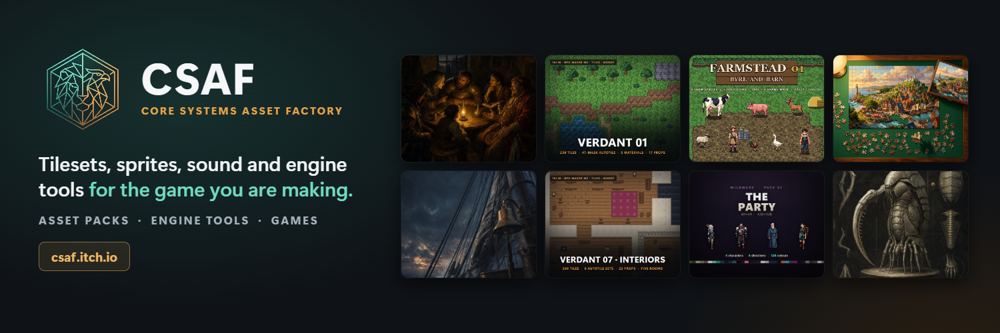

Verdant 00 — Series Sampler: 16 Biomes from the Paid Packs, Free [16x16]
A free sampler of the whole Verdant series: 878 tiles at 16x16, one complete autotile set and its grounds from each of 16 paid packs.

Game development assets, engine tools and games: tilesets, sprite packs, sound effect packs, game music, RPG Maker MZ plugins, GameMaker assets, Unity and Unreal Engine editor tools, and games you can play in the browser. 686 products, each linked to its store page.
Need something we do not make yet? Post it on the Request Desk. We read every request.
How these are made. Every CSAF product is made with AI. Each entry below repeats the AI disclosure exactly as its store page states it (for example "AI Assisted, Code, Graphics").
A free sampler of the whole Verdant series: 878 tiles at 16x16, one complete autotile set and its grounds from each of 16 paid packs.
A complete 16×16 overworld set — and the delivery is the point.
Verdant 02 Elevation is a 16x16 pixel art elevation tileset (raised plateaus and cliffs seen from above), for RPG Maker MZ, Tiled, Godot 4 and Unity 6.
Three biomes, and every one of them joins the grass properly. Verdant 01 gave you a grassland. Verdant 02 gave it elevation.
771 tiles. 9 complete 47-mask autotile sets — and 3 of them animate, including the coastline itself. Open sea, a reef edge, a breaking shoreline, a tidal beach, a river with its own banks, a reed marsh and timber jetties.
236 tiles. 4 complete 47-mask autotile sets, 23 grounded props, and walls that actually read as walls. A flagstone floor, ashlar masonry, crypt brick, a chasm that drops out of the floor, and moss creeping over all of it.
356 tiles. 6 complete 47-mask autotile sets, 32 grounded props, 3 animated sets — and stained glass, which is the reason this pack looks like nothing else in the series.
386 tiles. Six complete 47-mask autotile sets, 22 props that each ship twice, and three animated light sources. Verdant 01 gave you a grassland. 05 took you underground.
A peat bog you can actually build a level in. 470 tiles, and 376 of them are the joins. Black tannin water you cannot cross. A mud bank you can.
A market town you can lay out end to end — a cobbled high street, a market square, timber-framed housefronts under two kinds of roof, and hedged back gardens.
581 tiles. Ten complete 47-mask autotile sets, 28 harbour objects each shipping two or three times, animated water — and a port built as ONE place rather than as four packs you have to reconcile.
A deck you can build a level ON, not a boat you can put on a map. 477 tiles, and 376 of them are the joins. A holystoned oak deck you can lay out. A bulwark that reads as standing up.
414 tiles at 16x16. 7 complete 47-mask autotile sets, 18 objects, and the feature this series cut once and deferred for months: terrain that reads as being at two different heights, at sixteen pixels.
603 tiles at 16x16. 11 complete 47-mask autotile sets, 18 objects, 2 animated sets — and a battlement that runs unbroken along a wall of any length, in every direction.
635 tiles at 16x16. A modern working building: an open-plan office, a lobby, a corridor spine and a studio — with 11 complete 47-mask autotile sets, 20 objects, 3 animated sets and ready importers for RPG Maker MZ, Tiled and Godot.
546 tiles at 16x16.
Verdant 16 East Asian Village is a 16x16 pixel art tileset of a Japanese village: a shrine approach, terraced rice paddies, village houses, matted interiors and a bamboo grove, for RPG Maker MZ, Tiled and Godot 4.
Verdant 17 Urban Decay is a 16x16 pixel art tileset of a derelict city block: cracked roads, broken pavement, collapsed masonry, vacant lots and ruined interiors, for RPG Maker MZ, Tiled and Godot 4.
Verdant 18 Victorian Industrial is a 16x16 pixel art tileset of a Victorian works: a sawtooth mill shed, paviour yards, a firebrick furnace house, mill floors and a canal, for RPG Maker MZ, Tiled and Godot 4.
Verdant 19 Haunted House is a 16x16 pixel art tileset of an abandoned Victorian house: rotten boards, peeling wallpaper, dust sheets, cobwebs and a cellar, for RPG Maker MZ, Tiled, Godot 4 and Unity 6.
Verdant 20 Prison is a 16x16 pixel art tileset of one prison wing: cells, steel bars, the landing walkway, the outer wall and the exercise yard, for RPG Maker MZ, Tiled, Godot 4 and Unity 6.
Verdant 21 School is a 16x16 pixel art tileset of a whole school: classrooms, a science lab, the corridor, hall, library, dining hall and the yard, for RPG Maker MZ, Tiled, Godot 4 and Unity 6.
689 tiles at 16x16.
698 tiles at 16x16.
640 tiles at 16x16.
Verdant 25 Infernal is a 16x16 pixel art tileset of a volcanic underworld: lava channels, cooling crust, basalt, ash, sulphur flats and the workings left in them, for RPG Maker MZ, Tiled, Godot 4 and Unity 6.
1052 tiles at 16x16 for the sea floor: a lit shell sand shelf, abyssal ooze, a coral reef, a kelp forest, a drowned city's pavement, talus, columnar vent rock and a trench that drops into black — with the wreck, the reef heads and the ruins lying on it.
Verdant 27 Elemental Dungeon is a 16x16 pixel art tileset of a dungeon with four elemental halls (fire, ice, flora and storm) off one flagstone nave, for RPG Maker MZ, Tiled and Godot 4.
554 tiles at 16x16 for an old-growth forest floor: dark loam, cushion moss, leaf litter, a sunlit fern understorey, a trodden trail, and a raised root bank that stands up out of the ground, with great oaks, pines and birches, deadfall, fungi, standing stones and a woodsman's camp.
498 tiles at 16x16 for a crystal cavern: dark fractured cavestone, glow lichen, amethyst crystal fields, a quartz-sand trail, and raised geode walls with a violet crystal lip, with crystal clusters in four hues, columns and spires, geodes, stalagmites and flowstone, a rune obelisk, a crystal...
541 tiles at 16x16 for a railway terminus and the yard behind it: ballasted track running both ways, raised island platforms with a painted edge, a concourse hall floor, granite forecourt setts, weeds through the ballast and a cinder patch, with the landmarks a station is recognised by — a...
740 tiles at 16x16 for a hospital ward, an operating theatre and a dispensary: coved safety vinyl, conductive antistatic flooring with its earthing strip, brushed stainless benching, poured seamless resin, studded barrier matting, and drawn privacy screens round the bed bays — with the cast a...
637 tiles at 16x16 for a hangar bay, a command deck and an engineering space: deck plating, shielded reactor plate, hangar floor, bright alloy decking, non-slip tread plate, faced bulkheads and cable conduit — with the cast a station is recognised by, from cargo containers and fuel drums to a...
527 tiles at 16x16 for a fungal cavern: a damp rot floor with violet shale breaking through it, golden spore drifts, a mycelium ribbon winding between them, and giant toadstool caps you raise as masses and stand on their own great stems.
365 tiles at 16x16 for a city street at night, in the rain: wet asphalt, a sidewalk standing on a kerb, a polished plaza and standing water on all three.
372 tiles at 16x16 for a village fair on a green, in daylight: trodden paths, straw round the stalls, a plank stage and big striped marquees, with bell tents, market stalls, a carousel whose roof and horses turn, a high striker, a coconut shy and bunting to string between its poles.
347 tiles at 16x16 for a harbour village on a sunny coast: beach sand, the sea with a surf line along the shore, red-earth terraces on the hill, a stone quay standing in the water, whitewashed houses under terracotta roofs, olive trees, parasols, rowboats and a windmill whose sails turn.
335 tiles at 16x16 for a realm above the clouds: cloud islands floating in open sky with billowed edges and lavender undersides, gilded alabaster terraces, a golden brick path, pools of liquid light, a golden gate, a rainbow, trees of golden leaves, a fountain of light and an orrery whose...
Waterfalls you build on the 16x16 grid. A river crosses the upland, runs white through rapids, goes over the edge and falls down a cliff of any height into a plunge pool, and every piece of it is a tile that animates.
Ground that meets ground, with no strip of grass in between. 12 complete 47-mask transition sets for the Verdant 16x16 series: a dirt road onto a beach, a pond sitting in sand, snow on stone, ash on dirt.
A world map drawn like a chart, and the same map in natural colour. 700 tiles at 16x16: every tile exists twice, once on parchment and once in natural colour, drawn once so the two line up exactly.
The boreal forest in winter.
The shops a fantasy town needs, stocked or sold out. 444 tiles at 16x16 in one 92-colour palette: a weaponsmith, an armourer, an apothecary, a bakery, a magic stall and an adventurers' guild inside one market hall.
The winter twin of Verdant 09 — Town, tile for tile. 510 tiles at 16x16 in one 78-colour palette: the same town under snow, every tile at the same position in the same sheet as its summer twin.
Commercial use permitted in unlimited projects, no attribution required; you may not resell the tiles themselves as an asset pack.
Verdant 09 Town after the fire, tile for tile. 510 tiles at 16x16 in one 65-colour palette: the town of Verdant 09 — Town sacked and burned, every tile at the same position in the same sheet as its intact twin.
The A3 and A4 pages for RPG Maker MZ, in the Verdant series' 16x16 pixel-art look: 16 roofs and 16 building walls on the A3 sheet, 24 wall tops and 24 wall faces on the A4 sheet, upscaled exactly 3x to MZ's 48px.
An orc war camp, complete enough to build a level from, in the Verdant series' 16x16 pixel-art look: 509 tiles, 35 objects and a finished 40x26 sample map.
A museum interior, complete enough to build a level from, in the Verdant series' 16x16 pixel-art look: 354 tiles, 50 objects and a finished 40x28 sample map.
A digital world, complete enough to build a level from, in the Verdant series' 16x16 pixel-art look: the inside of a machine for the cyberspace dungeon an RPG keeps for its last act.
A Halloween harvest for your map: 313 tiles at 16x16 in one 67-colour palette, with jack-o'-lanterns that flicker, a witch's cauldron that bubbles, pumpkin beds you paint like terrain, and the autumn field and lane of Verdant Seasons, tile for tile.
One enchanted wood, healthy and cursed, built tile for tile: 431 tiles at 16x16 in one 65-colour palette.
An Egyptian tomb you can build a level from: 516 tiles at 16x16 in one locked 52-colour palette, 6 complete autotile sets, a painted wall band of 22 tiles, 28 objects and animated braziers, torches, a sand fall and spike traps, with a finished sample map.
Three dungeons in one pack, each in a palette of its own: 493 tiles at 16x16 in one locked 81-colour palette, 7 complete autotile sets, 30 objects and 5 animated subjects, with a finished sample map for each dungeon.
A factory you can build a level from: 2,490 tiles at 16x16 in one locked 74-colour palette: animated conveyor belts in 3 tiers with every junction, 12 inserter arms, 11 animated machines, a pipe set, power poles and 10 complete autotile sets for ore fields and a mill floor, with a finished...
Three tropical biomes for your map: 633 tiles at 16x16 in one 89-colour palette: a rainforest floor under kapok giants, a grey mangrove flat with a winding creek, and a palm beach running down to a turquoise lagoon whose surf washes in and out.
A Wild West setting for your map: 344 tiles at 16x16 in one 67-colour palette: a boomtown with a two-storey saloon, a general store and a sandstone jail on a plank boardwalk, open golden prairie with a fenced corral, and a red-rock canyon with raised slickrock benches and a mine.
The puzzle layer for a top-down dungeon: 12 mechanisms in 25 states, 3 animated cycles and breakable walls, at 16x16 in one 46-colour palette, every state its own tile and wired for RPG Maker MZ events, Tiled, Godot and Unity.
The inside of your castle: 326 tiles at 16x16 in one 81-colour palette: a great hall with a raised stone dais, strewn rushes, a long hearth and feast tables; the kitchens on red quarry tiles; the barracks on plank boards with a guardroom.
Your castle, after the siege: 616 tiles at 16x16 in one 65-colour palette.
Your ruins, in deep winter: 698 tiles at 16x16 in one 45-colour palette.
A wizard school's library, alchemy hall and observatory: 382 tiles at 16x16 in one 97-colour palette. Commercial use permitted in unlimited projects, no attribution required; you may not resell the tiles themselves as an asset pack.
Bridges, fords and stepping stones for a 16x16 map: 644 tiles in one 52-colour palette. Commercial use permitted in unlimited projects, no attribution required; you may not resell the tiles themselves as an asset pack.
The tiles a monster tamer route is made of, at 16x16: 490 tiles in one 55-colour palette. Commercial use permitted in unlimited projects, no attribution required; you may not resell the tiles themselves as an asset pack.
A castle built of ice, complete enough to build a level from, at 16x16: 587 tiles in one locked 40-colour palette.
A formal palace garden, complete enough to build a level from, at 16x16: 318 tiles in one locked 50-colour palette.
An alien planet for your map: 296 tiles at 16x16 in one 41-colour palette: a cratered plain of dusty mauve regolith where a ship came down, an acid sludge marsh, and a teal xeno jungle of bulb stalks and glow fronds.
Connecting fences for a 16x16 map: 729 tiles in one 55-colour palette. Commercial use permitted in unlimited projects, no attribution required; you may not resell the tiles themselves as an asset pack.
An add-on for Verdant 12 — Scarp: 72 pieces at 16x16 in Scarp's own 21-colour palette that turn its cliffs, roads, bracken and scree on a 45 degree diagonal, plus stairs and ramps cut into the scarp.
An add-on for Verdant 07 — Interiors: 255 tiles at 16x16 that give its one-storey rooms a way up and a way down.
A natural limestone cave you can build a level from: 675 tiles at 16x16 in one 68-colour palette: dark rock walls standing up from a pale cave floor, an underground lake with turquoise shallows that swell and draw back, silt banks, flowstone terraces, and cave mouths that open in the cliffs of...
A candy world you can build a level from: 550 tiles at 16x16 in one 59-colour palette: a mint sugar-grass meadow under gumdrop trees, pink candyfloss thickets standing up out of it, a chocolate river that flows through its cocoa-crumb bank, a biscuit path, and frosted peaks of lavender icing...
The rooms of a monster tamer town, at 16x16: 694 tiles in one 92-colour palette. Commercial use permitted in unlimited projects, no attribution required; you may not resell the tiles themselves as an asset pack.
A domed desert city you can build a level from: 535 tiles at 16x16 in one 81-colour palette: whitewashed houses that stand up from the street, 9 domes in three sizes and three finishes, three minarets, a covered bazaar, market stalls and a palace court with a pool that moves.
The tavern every RPG town needs, at 16x16: 428 tiles in one 98 colour palette. Commercial use permitted in unlimited projects, no attribution required; you may not resell the tiles themselves as an asset pack.
The dungeon half of a map, at 16x16: 760 tiles in two locked palettes. Commercial use permitted in unlimited projects, no attribution required; you may not resell the tiles themselves as an asset pack.
A hot spring hillside at 16x16: 1,137 tiles in one 86 colour palette. Commercial use permitted in unlimited projects, no attribution required; you may not resell the tiles themselves as an asset pack.
Autotiling is the feature every tile pack advertises and almost none of them let you try. Paint dirt onto grass and watch a complete 47-mask blob autotile set decide, tile by tile, which of its 47 pieces belongs in each cell.
40 battle backgrounds for RPG Maker, in the Verdant series' pixel-art look: 10 biomes, each at dawn, day, dusk and night.
Verdant Forge is a tileset generator you run yourself. Open one HTML file in a browser — no install, no account, no internet, no Node, no Python, no build step — pick a palette, and export a complete, ready-to-import pack.
Verdant GB is a 16x16 Game Boy style tileset for GB Studio, Tiled, Godot 4, RPG Maker MZ and Unity, drawn only in the four GB Studio shades (#071821 #306850 #86c06c #e0f8cf).
Most tile packs ship a tree. A game where the player harvests needs the tree, the chopped trunk, the stump, the regrowth, and the log that drops.
497 tiles at 32x32. 8 complete 47-mask autotile sets, 26 objects, animated water and a burning fire pit — and the feature this series has never shipped before: terrain that reads as being at two different heights.
490 tiles at 32x32.
Verdant Hex 01 is a 32x32 pointy-top hex tileset in pixel art, for Godot 4 and Tiled (RPG Maker MZ cannot draw hex maps, so there is no MZ importer).
Commercial use permitted in unlimited projects, no attribution required; you may not resell or redistribute the pack itself. ⚠️ For Godot 4 and Tiled.
Every door, gate, shutter, cabinet, locker, chest and hatch in the Verdant series, made to open. 34 objects in the series' 16x16 pixel-art look, each in four states: closed, opening, opening, open.
70 props. 194 tiles. 7 ground materials. 3 animated sets. A clutter pack for 16×16 top-down games — the things you put on the ground once the ground is done.
492 tiles · 4 seasons · 8 complete 47-mask autotile sets · one locked 54-colour palette Most tile packs give you a place. This one gives you a year.
Verdant Showground is a 16x16 pixel art tileset volume for RPG Maker MZ, Tiled, Godot 4 and Unity: three town venues in one download, the Sports Grounds, the Playhouse and Big Top, and the Aquarium.
Verdant Wonders is a 16x16 pixel art tileset volume for RPG Maker MZ, Tiled, Godot 4 and Unity: three fantasy landmarks in one download, the Poison Fen, the Sky Isles and the Great Tree.
Twelve dungeon creatures in four true directions, and every one of them strikes, flinches and dies.
Eleven flying dungeon foes on the Deepwarren palette: a looping flight, strike, hurt and a death that falls to the floor.
The 12 creatures of Deepwarren 01: The Living Dark as RPG Maker MZ battlers.
Free dungeon monster sprites for top-down RPGs and action games, taken file for file from the paid Deepwarren packs: a giant warren rat (Deepwarren 01) and a giant bat (Deepwarren 02), each with an idle pose, a walk or flight loop, a strike, a hurt and a death, plus the same rat as an RPG Maker...
10 animated pixel-art visual effects for 2D games, on transparent ground, at 128 and 64 pixels. Fire, earth and light: impacts, rings, bursts, debris, dust, a flame loop, a critical star and a slash arc.
4 farmyard birds, free: a rooster, a hen, a chick and a duckling, each with every facing and every animation they ship with in the paid Farmstead packs.
Farmstead 01 gave the farmyard its animals standing and walking. This pack gives them everything else.
Six farm animals and the two hands who keep them. A dairy cow, a sow, a ewe, a billy goat, a rooster and a gander, with a milkmaid and a stablehand at the same world scale.
The farm animals that EAT. An ox, a donkey, an alpaca, a turkey, a hen and a drake, with a poultry keeper and a ploughman at the same world scale.
The farmyard's young. A calf, foal, goat kid, lamb, piglet, gosling, duckling and a chick, each one the young of an animal the Farmstead series already ships.
A whole goblinoid warband, in one style, at one true scale. Most enemy packs give you a goblin.
47 nature props in one style and one 64-colour palette: 12 trees and saplings, 7 shrubs and thickets, 7 ferns and grasses, 11 wildflowers, 4 fungi and 6 pieces of deadwood.
Nine village tradesfolk who actually do their job. Almost every top-down character pack ships an idle and a walk. That is a crowd, not a village: the blacksmith stands in his forge with his arms by his sides.
Ten more tradesfolk from the same village.
The town watch, and the townsfolk who can fight.
The Hearthhands village at home.
The Hearthhands village harbour, at work.
The Hearthhands village on All Hallows' Eve.
A face for every villager in the dialogue box. 38 portraits for all 19 villagers of Hearthhands 01 and 02, in two expressions, neutral and smile.
Six free villager sprites for top-down RPGs and town or farming games, taken file for file from the six paid Hearthhands character packs: a farmer (Hearthhands 01), a fishmonger (02), a town crier (03), a pinafore girl (04), a salt raker (05) and a villager in a pumpkin-head costume (Hallowtide).
Four animal sprites for top-down games: herd dog, draught horse, brown bear and mane lion, each in 4 directions with a standing pose and a 9-frame walk, drawn natively at 128x128 and 64x64.
Kithfell 02 gave the house pets their idle and their walk. This pack gives them their downtime.
Nine house pets for a top-down game: three cats, three dogs, a rabbit, a ferret and a hedgehog. Pack #2 of Kithfell, our animal series: one palette, one 128px cell, one ground line.
Eight woodland animals for a top-down game: a red deer stag and hind, a wild boar, a grey wolf, a red fox, a badger, a red squirrel and a brown rat. Pack #3 of Kithfell, our animal series: one palette, one 128px cell, one ground line.
Free animal sprites for top-down RPGs, farming and cozy games, taken file for file from the paid Kithfell packs: a draught horse (Kithfell 01), a beagle (Kithfell 02), a red fox (Kithfell 03), and the beagle lying down (Kithfell 02 Actions).
Two original pixel fonts drawn as a pair for role-playing game screens. Tallow is the dialogue face for text boxes, menus, item names and numbers (native 14 px).
A free three-character way into the Mourncrest series. Three of the common dead: a risen gravedigger, a shambling villager and a bloated drowned corpse, a standing pose in each of four directions, at native 64x64.
Six undead characters for top-down RPGs — skeleton, ghoul, wight, wraith, gravebound and bone-hound — drawn at native 64×64 and 128×128 in one shared palette.
Five robed cultist sprites for top-down RPGs: cultist, acolyte, censer bearer, hierophant and thrall, each in 4 directions with a 3-frame walk, drawn natively at 64x64 and 128x128 on one 48-colour palette.
Five dungeon creature sprites for top-down RPGs: dire bat, carrion crow, tomb spider, ossuary ooze and barrow wyrm, each in 4 directions with a 3-frame walk, drawn natively at 64x64 and 128x128 on one 60-colour palette.
Three armoured monster-hunter sprites for top-down RPGs: knight, templar and inquisitor, each in 4 directions with a 3-frame walk, drawn natively at 64x64 and 128x128 on one 70-colour palette.
45 graveyard props for top-down games — sarcophagi, coffins, headstones, braziers, urns, bone piles, altars, grave markers, tools and the small things a burial ground is actually full of.
A face for every character in the dialogue box. 44 portraits for all 22 characters of Mourncrest packs 00 to 04, in two expressions, neutral and fury.
Eight undead, and every one of them fights: the banshee, ghoul, gravebound, lich, mummy, skeleton, wight and wraith.
Nine cyberpunk street characters for a top-down game: a street samurai, a netrunner, a corporate agent, an android, an augmented bruiser, a courier, a street-food vendor, a street kid and a riot enforcer.
Eighteen original creatures for a creature-taming RPG, in six three-stage evolution lines, each with a battle FRONT, a battle BACK and a 4-direction overworld walk.
Two original pixel fonts drawn as a pair for horror games. Sallow is the dialogue face: a narrow hand for notes, diary pages, dialogue, item text and menus that stays readable over a whole page (native 14 px).
47 fire ability and spell icons in one style and one 32-colour palette, for skill bars, spell books, item menus and tooltips.
Ten birds and flying insects, each with a looping wing-flap in four directions and a ground shadow for every frame. Pack #1 of Skyfoundling, a flying-fauna series: one palette, one 128px cell, one shadow format.
48 looping pixel-art status effects for RPG Maker MZ state overlays, Godot 4 and GameMaker: 25 ailments and 23 buffs, each an 8-frame loop at 96x96 and 48x48.
60 pixel-art game-feel effects for 2D games: the dust, hits, pickups and pop-ups that make jumping, fighting and collecting feel good. 51 one-shots and 9 loops, each 8 frames, at 64x64 and 32x32.
Ten present-day townsfolk for a modern top-down game. Pack #1 of Streetlight, the first contemporary series in our catalogue: one palette, one grid, one ground line, so every future Streetlight pack drops onto the same map.
23 dungeon monsters on one locked palette, every one of them combat-complete.
24 farm animals and farmhands on one locked palette, every one in 4 directions, at 144x144 and 72x72. What is in it Farmstead 01: Byre and Barn (8): dairy cow, sow, ewe, billy goat, rooster, gander, milkmaid, stablehand.
Both Hearthhands packs, one download, one palette The Working Day and Market and Craft together: 19 working villagers — baker, farmer, fisher, herbalist, herder, miner, shopkeeper, smith, woodcutter, carter, chandler, cooper, fishmonger, innkeeper, potter, scribe, tanner, washerwoman, weaver.
21 animals on one locked palette, every one in 4 directions, at 128x128 and 64x64.
Mourncrest packs 01 to 04 in one download: 19 graveyard-fantasy sprites for top-down RPGs (6 undead, 5 cultists, 5 barrow beasts and the 3 armoured wardens who hunt them), each in 4 directions with a 3-frame walk, drawn natively at 64x64 and 128x128.
Wildmark 01, Wildmark 02 and Wildmark Actions 01 in one download: 8 fantasy adventurer sprites for top-down RPGs (elf, warrior, mage, rogue, priest, vanguard, alchemist and forester), each in 4 directions with a standing pose and a 6-frame walk, plus strike, hurt and death for the first four, at...
Four travellers who belong on the same road A hooded adventurer with a longsword across her back. An old pedlar under a towering willow pack-frame. A helmed outrider walking escort.
Characters your player IS, not ones they fight Wildmark is a new numbered series, and it starts with the party.
Four fantasy adventurer sprites for top-down RPGs: priest, vanguard, alchemist and forester, each in 4 directions with a standing pose and a 6-frame walk, drawn natively at 128x128 and 64x64.
Four adventurers of other folk, for the same company. A dwarf smith, a halfling burglar, a monk of the cat folk and a warlock of the horned folk.
Six dragonborn adventurers for the same company. A knight, a brawler, an archer, a warden, a sorcerer and a priest of the dragon folk, each with a scaled dragon's head in a different lineage colour.
You bought a character pack and it shipped an idle and a walk. Then you needed the character to hit something, take a hit, and die, and it was not in the download.
Combat states for the whole Wildmark company, in every facing. 68 new animation cycles, 388 frames per grid size, at 128×128 and 64×64.
The everyday actions for the Wildmark 01 party, in every facing. Pick up, interact, knocked down and get up for the elf, warrior, mage and rogue: 64 new animation cycles, 384 frames per grid size, at 128×128 and 64×64.
A dodge roll and a block for the Wildmark 01 party, in every facing. The elf, warrior, mage and rogue get the two defensive moves an action game asks for: 64 new animation cycles, 432 frames per grid size, at 128×128 and 64×64.
The eight Wildmark adventurers as RPG Maker MZ side-view battlers.
Four free fantasy adventurer sprites for top-down RPGs, taken file for file from the four paid Wildmark packs: a warrior (Wildmark 01), a forester (Wildmark 02), a dwarf (Wildmark 03) and a dragonkin brawler (Wildmark 04).
One palette. Every slot a JRPG needs. Bronze, glass, bamboo, cypress and steel — struck, and left to ring in one room. Most anime-flavoured packs are a folder: some bright chimes, some sword sounds, some sparkle, assembled from wherever.
Potion making in sound: pours by viscosity, a brew you set by heat, and the alchemist's whole bench 114 alchemy sound effects: glassware, a tincture, a syrup and quicksilver poured into a vial, a flask and a cauldron, a brew at 4 heats from a simmer to a rolling boil, the mortar on four...
650 dialogue sounds. 10 speakers, each talking in a made up language of its own, in 5 moods. Text advance audio in the babble style.
A developer asked for this, tried to build it, and could not.
A shoot em up escalates. These sounds escalate with it.
104 dialogue sounds. 13 speakers, not one blip pitched 13 ways. New: Blip 02, a second cast. Thirteen more speakers with the same eight cues and the same file names, measured against these thirteen so that none of the 26 collide.
Free dialogue voices for your text boxes Free download: 32 dialogue sound effects in WAV and OGG for Godot 4, Unity, GameMaker, RPG Maker MV and MZ, Unreal or the web.
104 dialogue sounds. 13 new speakers, each a different synthesis method. A second cast for text advance dialogue, the ticks and chirps a text box plays as a line types out.
A third cast of dialogue voices 104 dialogue sounds. 13 new speakers, each a different synthesis method.
A village cast of dialogue voices 104 dialogue sounds. 13 new speakers, each a different synthesis method.
A steampunk battle, as one sound 129 sound effects for steampunk combat: five steam and air guns in every state, six gadget weapons, three clockwork foes that wind down as they lose health, brass armour, a battle interface and four battle beds, in one brass, iron and steam sound.
The whole investigation, as one sound 124 sound effects for detective, mystery and investigation games: examine, evidence sorted by kind, the corkboard, the deduction, the interrogation and the accusation, in one paper, brass and rain sound.
132 sounds for tower defense, lane strategy and autobattlers — built as a state language, not a bag of impacts. A tower defense player learns the lane by ear.
Every hold a game climbs, one hand on all of them 648 climbing sounds on 12 holds: grab, let go, shimmy, climb up, climb down and slip, at three body weights, 3 takes in every cell, plus 12 seamless climbing loops.
103 sounds. 17 modern places that feel empty. Car parks, subway platforms, laundromats, stairwells, a mall after hours, a server room, an office at night, a storm drain, a closed arcade, an indoor pool.
12 monsters, every one a whole voice set 120 creature voice sound effects. 12 creatures, and every one ships the same 6 states: idle, alert, attack, hurt, death, special.
119 sound effects for the part of a roguelike no dungeon pack covers: the run itself. A generic dungeon pack sells the door and the chest.
Fear your game can turn up 101 horror sound effects built around four ladders: the room gets worse, the heart beats faster, the build gets longer and the scare lands deeper, one rung at a time.
Ancient Egypt, as one sound 137 Ancient Egypt sound effects in WAV and OGG for any game engine (Unity, Unreal, Godot, GameMaker, RPG Maker and HTML5): tomb mechanisms, hieroglyph puzzle stones, 8 spells of the gods with a charge, a release and a fizzle each, scarabs, cobras and mummies, bronze...
Seventeen places, each shipped in the layers it is made of. Most ambience packs hand you an atmosphere.
Everything in this pack is the same machine, in the same room.
An exclusion zone in sound: a Geiger counter you set by dose, and the dead town around it 103 post apocalyptic sound effects: a Geiger counter at 8 dose levels from a few ticks to a roar, a dosimeter, the hazmat kit, rust and scrap struck three ways, steam, acid and live cables, footsteps on...
One foot, 12 grounds 576 footsteps indexed the way a footstep system asks for them: surface x gait x weight, with 4 takes in every cell, plus 12 seamless walking loops.
What your character's clothes, armour and kit do when they move, as a layer on top of your footsteps 152 foley sound effects for six garments: cloth, heavy cloak, leather, mail, plate, adventurer's kit.
Every motor in this pack ships a load ladder — three or four seamless loops rendered from the same body — instead of one engine loop you have to pitch-shift and hope.
Every system cue a fighting game fires 134 fighting game sound effects in one arcade voice: hits on 7 strengths to the body and the face, a hit stop for every strength, guard and guard break, parry, throws, the super, an energy projectile, a 10 step combo counter, the round and the KO.
Free cozy sound effects for farming, cooking and pet games Free download: 27 cozy sound effects in WAV and OGG for Godot 4, Unity, Unreal, GameMaker, RPG Maker MV and MZ or the web, including 5 seamless loops.
Every dish from the pantry to the plate 126 cozy cooking sound effects: 8 dishes, and every one ships the same 6 stage chain, from the board to the table, each dish made its own way.
Every pet from greeting to sleep 126 cozy pet sound effects: 8 pets, and every one ships the same 8 stage care chain, from the moment it greets the player to the moment it falls asleep, each pet its own way.
Every crop from the seed to the basket 107 cozy farming sound effects: 8 crops, and every one ships the same 5 stage chain, from planting to the harvest coming off, each crop harvested its own way.
One working steam railway, at six speeds 109 railway sounds built from one set of iron, steel, brass, oak, glass and bronze models: the locomotive exhaust and the rail joints at six speeds as seamless loops, whistles, steam and brakes, the footplate, the carriage, the station, the signal box and...
A complete sound suite for a wuxia or xianxia RPG 133 sounds built from one palette of jade, porcelain, lacquered wood, iron, silk and paper: menus, dialogue, the jian and the dao, martial arts, the Five Phases, cultivation, the flying sword, formations and talismans, rewards, encounters,...
A match your game can raise 103 ball sports sound effects built around four ladders: the crowd brightens toward a roar, the strike hits harder, the shot clock beeps faster and the ball falls from higher, one rung at a time.
Everything in this pack is the same ship.
The same ship as Leeward, taken into a fight: incoming shot, hull hits, fire aboard, boarding and the sinking 124 naval battle sound effects: shot whistling in at four ranges, near misses by calibre, round, chain and grape shot striking the ship heard on deck, below decks and from another ship,...
Survival sound effects where the tools wear out: fresh, worn, failing, broken 103 survival sound effects: an axe, a pickaxe, a hammer, a shovel and a knife at three conditions each plus the moment each breaks, the campfire from a struck flint to a bonfire, gathering, crafting and building,...
The rest of RPG Maker MZ's default sounds, in Overdub's voice 208 sound effects and 29 background loops, named exactly like the MZ defaults they replace: every default sound effect Overdub left playing, and every default background sound.
Every default sound a new MZ project plays, re-voiced 137 new sound effects, each named exactly like an RPG Maker MZ default sound effect.
Five race engines, every rev, every pass by 110 racing sound effects: five cars, each with its own engine, plus tyres, crashes, boost, the race and the pit stop.
One working mine, heard as one place 108 mine sounds built from one set of rock, iron, oak and water models: picks ranked by rock hardness, the minecart, the winch and the cave-in as whole lifecycles, footsteps on four grounds in three rooms, and 13 seamless loops.
Every mechanism in this pack ships its whole lifecycle. Not one "door open" one-shot — a handle, a start, a swing that loops for as long as your animation runs, a stop, a slam, and a rattle when it is locked.
Feudal Japan, from one palette 106 sound effects for a game set in feudal Japan: the menus, the katana, the shinobi's kit, the castle, the shrine and the war camp, all struck, slid and rung from the same few materials.
A robot body your game can drive 106 robot and mech sound effects built around four ladders: the footsteps land heavier, the power core brightens, the alert beeps faster and the malfunction runs longer, one rung at a time.
One vessel. A whole family of sound effects. Free sound generators make one sound at a time from random settings, so the jump, the coin and the menu click rarely sound like the same game.
Breakables that tell the whole story: strain, crack, break, settle 110 breakable sound effects: 10 materials, and every one ships the same 6 stages, from the strain before it gives to the debris coming to rest.
Ship Systems: Sci-Fi Interface and Machinery One spaceship, 139 sounds. The console, the airlock and the red alert all sound like the same vessel. Most sci fi packs are folders of unrelated noises.
The card table a deckbuilder is played on 198 sounds for deckbuilders, card battlers and roguelike deck games.
108 sound effects. 6 elements. One 12-stage casting chain, shipped complete for every single one. This is not a bag of magic sounds. It is a spell state machine, in audio.
A western town in sound: three period guns in three places, and the frontier around them 145 western sound effects: a six-shooter, a lever rifle and a scattergun as a game fires them, every gun on main street, in the saloon and in a canyon, gunfire at four distances, a shootout you turn up a...
The Norse saga, as one sound 125 viking and Norse sound effects in WAV and OGG for any game engine (Unity, Unreal, Godot, GameMaker, RPG Maker and HTML5): the shield wall as a system, 10 war horn signals, 8 Elder Futhark runes with a charge, a release and a fizzle each, seidr staffs and bone...
The whole catch, on 5 waters 129 fishing sounds built as one rod, one reel and one line, fished on 5 different waters: still pond, river current, sea pier, ice hole, night lake.
A dive your game can take deeper 102 underwater sound effects built around four ladders: the water gets darker, the sonar contact closes, the diver breathes faster and the hull groans longer, one rung at a time.
104 sounds of weather, built to be mixed rather than chosen. Most weather packs give you rain_light and rain_heavy and leave you to crossfade between them.
144 medieval combat impacts, filed by what hits what. A combat system does not ask for "axe". It asks for "axe on mail", because the armour decides the sound as much as the weapon does.
A clicker is not a game with a click in it. It is a game where one action fires thousands of times and has to keep feeling different as the numbers grow.
Every ability gate, from refusal to the way through 104 metroidvania sound effects: 8 ability gates, and every one ships the same 5 stage chain, from the barrier waiting for you to the barrier gone, plus the ability that opens it.
Hear the move without looking at the screen 101 puzzle sound effects: 8 piece materials, and every one answers the same 6 ways: picked up, set down, correct, wrong, nearly right and taken back.
Typewriter and handwriting text sounds 143 text sounds for dialogue that is written rather than spoken. 11 writing voices, each with the same 13 cues a text box can drive.
The sound of a stealth game's detection ladder, and everything around it 103 stealth sound effects: tension that stacks as suspicion rises, a filling detection meter, escalations and their matched releases, distractions, takedowns, lockpicking, cameras, laser grids and alarms, hiding, light and...
Natural disasters you drive with one value 104 sounds for eight disasters.
135 sounds of water, indexed by how deep it is. Most packs answer "I need water footsteps" with a folder called water holding a handful of splashes.
The final boss is audibly the same material as the first random encounter. Most music packs go wide, giving you one track per location.
Most game music packs are a grab-bag. Tracks bundled together because they share a genre. Drop three of them into one project and your player hears the seams: different rooms, different instruments, different composers.
This is Vol. I after the world falls. Fourteen tracks covering exactly the same slots as Aetherbound Vol. I, built from the same eight themes, in the same keys - and every single mode is darker.
Airship is a 44 track score for steampunk and airship games: the helm and the boiler deck, a clockwork capital with its market, workshop, clock tower and music hall, the moors and the coal seam, a clockwork vault, sky battles, two bosses and the cues a game fires all day.
Ashen Realm is a 44 track soulslike score for games: a kingdom gone to ash, its roads and ruins, its cathedral and its barrows, nine fights from a common battle to the final boss, and one bonfire.
Bright & Cute is a 44 track score for casual, puzzle and match 3 games: the title, the menu, the level map, eight level themes, the shop, the idle screen, the pause, the results, the bonus round and the short cues a casual game fires all day.
Deep Space is a 44 track score for space games: the bridge and the engine room, a station and its cantina, drift and the nebula, planetfall and alien ruins, a derelict to board, ship battles, two bosses and the cues a game fires all day.
Desert is a 44 track score for desert fantasy games: the caravan road and the dune sea, the oasis town, the bazaar and the sultan's court, the sandstorm and the salt flats, a city buried in the sand, the battles and bosses fought over it, a sand wyrm, and the cues a game fires all day.
Twelve people, twelve five note themes, 50 tracks. Most music packs sell places: a town, a cave, a battle. This one sells the cast.
Elven Realms is a 44 track high fantasy score for games: a city in the canopy of a great forest, its court and its glades, the deep wood and the old roads, the barrows of the first kings, and the old war that comes back to the border, with seven pieces for it from the first memory to the final boss.
Embercrown is a 43 track JRPG score written to the NES sound chip's pitched budget: two pulse channels and a triangle. Not a modern arrangement with square wave patches on top.
FM Drive is a 44 track 16 bit action game music pack written to the Mega Drive / Genesis sound budget: 38 full looping pieces and 6 short cues, 32:51 of music, as OGG files with sample accurate loop tags plus all 44 editable MIDI sources and a channel map.
The original Game Boy could play four notes at a time. Two pulse channels, one wave channel, one noise channel, one note each. Three of them are pitched.
Frostfall is a 44 track score for one winter biome in a fantasy game, gone deep rather than wide: the first snow, the white road, the tundra by day and by night, the aurora, a frontier hold, a trapper's camp, a village of ice fishers, the frozen lake, the pine forest, the glacier and the high...
Gumshoe is a 44 track noir detective music pack for games: 38 full looping pieces and 6 short cues, 51:43 of music, as OGG files with sample accurate loop tags plus all 44 editable MIDI sources.
Forty-two tracks for the rooms a campaign actually spends its hours in. Not another combat pack: this is the village.
One house. One lullaby. 42 tracks. Somewhere upstairs there is a music box, and the tune it plays is five notes long: a child's rock down a third and back, then one step up onto the wrong note and home.
Forty-two tracks for a long game's whole war, not for one fight.
Jade Mountains is a 44 track score for wuxia and martial arts games: the sect hall, the training courtyard, the market town and the teahouse, the mountain road and the bamboo forest, duels, battles and bosses, and the cues a game fires all day.
Longships is a 44 track Norse saga score for RPGs: the longhall and the whale road, the barrow and the ice, a battle set, the jarl, the sea serpent and Ragnarok.
Forty-two tracks for a whole city, not for one street corner.
Overdub Score replaces every piece of music a new RPG Maker MZ project plays: all 48 default BGM and all 27 default ME, newly composed in one JRPG voice and filed under MZ's own file names (Theme4, Battle1, Town3, Victory1, Inn1 and the rest).
Overture is a free game music sampler: 68 tracks, two from each of our 34 game music albums, as OGG Vorbis (44.1 kHz stereo) with loop points in the file, plus the editable MIDI source of every track.
Forty-two tracks for a game set at sea, and not one of them is a shanty.
Sengoku is a 44 track score for feudal Japanese fantasy games: a mountain shrine, the high road through a province at war, a village under curfew, the bamboo grove by moonlight, the castle walls and the daimyo's court, the temples and the graves, nine fights from the first ronin to the last...
Spooky Season is a 44 track Halloween score for games: the trick-or-treat lane and the pumpkin patch, a haunted manor room by room, the churchyard and the crypt, a battle set, the headless horseman and the witching hour.
The Crimson Court is a 44 track gothic vampire castle music pack for games: 38 full looping pieces and 6 short cues, 45:24 of music, as OGG files with sample accurate loop tags plus all 44 editable MIDI sources.
The Holy Order is a 44 track score for the holy order in a fantasy game, from the morning bell to the ascension: the cathedral city and the city at vespers, the pilgrims' market and hospice, the scriptorium and the cloister garden, the pilgrim road, the wayside shrines and the abbey woods, the...
Forty-two tracks for the scenes a combat pack leaves out.
Forty-two tracks. One road.
Forty-two tracks. The same road, walked back. This is the companion to The Lantern Road and it is built on a single structural idea: every slot keeps its tonic and every mode rises by exactly one rank.
Fifty tracks. One oath.
The Run is a 44 track score for a roguelike or dungeon crawler, from the hub between runs to the way out: the title, the hub, the armoury, choosing a runner, the first door, 12 layered depths and skirmishes across four acts (the catacombs, the drowned works, the furnace and the heart), the...
Forty-two tracks for a game that goes down. A complete gothic dungeon-crawler score in one musical voice, built on a single idea: the cathedral is sinking, and every theme in the album is the same hymn heard at a different depth.
The Turning Sky is a 44 track exploration score for open world games, built in pairs. Twelve places, each written twice: once in daylight and once after dark.
Wayfarer is a royalty-free JRPG overworld and travel music pack for games: 42 tracks, 50:52 of music, as OGG Vorbis files (44.1 kHz stereo) plus the editable MIDI source of every track.
Forty-two tracks for the country between the towns. Not another combat pack and not an ambience library: this is the journey.
Zarya is a 44 track score for a Slavic folk village in a fantasy game: the izba hearth at dawn, the green and the well, the market square and the haggle, the smithy and the water mill, the wooden church and its bells, the elder's hall, the river at dusk, the birch road and the forest at night,...
Search the furniture, and watch it open. Ajar turns the dressers, desks, barrels, jars, pots, baskets, sacks and bookshelves already in your tileset into furniture the player can search.
Your own maps, as islands in the sky. Aloft is an RPG Maker MZ plugin (three JavaScript files, MZ 1.x) that turns any map into a floating island. Put <aloft> in the map's note and leave the sky empty or paint it with a region.
A hot-metal forging minigame for your RPG that plugs into your crafting.
Three free RPG Maker MZ minigames made from any picture in your project. Any Picture Minigames Sampler is three free plugins for RPG Maker MZ (1.x core scripts).
Screenshot plugins are free. This is not one. A screenshot plugin writes a PNG to the player's hard drive, and nothing in your game ever knows it happened.
Your game already knows what happened. Switches got flipped, variables went up, someone was spared or wasn’t.
A hanging that records what your player actually did. Arras takes the switches your game set, the variables it moved, the victories and the choices, and weaves them into an embroidered frieze in the Bayeux manner.
What this is, in plain words: Asterism is a skill tree plugin for RPG Maker MZ (version 1.0, tested on the stock MZ scripts). The download holds four JavaScript plugin files (raw, readable source), a Readme and a licence.
Your game already has a fortune-teller. This is the deck she reads from. Augury generates a complete 78-card arcana — 22 trumps and four suits of fourteen — from 46 hand-authored motifs, drawn as vector geometry while your game runs.
Every enemy attack becomes a dodge. When an enemy uses a skill that damages your party, the battle pauses and a framed arena opens.
Keep your permadeath plugin. This is the part the player comes back to visit. Your game already produces deaths. Barrow does not add a death mechanic and does not compete with the free permadeath plugins — keep whichever one you use.
Keep your shop plugin. This is the economy underneath it. Every shop plugin for MZ governs how a shop looks, or when it unlocks. Not one of them makes a price or a stock level respond to anything.
RPG Maker MZ gives every enemy the same nothing to stand on. A goblin rabble and a demon lord float at the same height over the same battleback, casting no shadow, leaving no trace, surrounded by no sign that anything lives there.
A one-on-one fighting game, inside your RPG. Bout is a real-time duel scene for RPG Maker MZ.
Every shop in your town already knows what it sells. None of them has a sign. A shop in RPG Maker MZ is an event with a Shop Processing command in it.
Ship-to-ship battles for RPG Maker MZ, drawn broadside-on like an age-of-sail painting. Two sailing ships fight on a painted sea under a painted sky. Your ship rolls on the swell in the foreground; the enemy lies beyond her.
RPG Maker MZ replaces your dialogue with a blue rectangle. Cartouche replaces it with an object — a made thing, with a material, a worked frame, cut corners, rim treatments and a nameplate struck into its head rail.
What this is, in plain words: Chimera Battle is a creature battle plugin for RPG Maker MZ (version 1.1; it works inside MZ's own battle system rather than replacing it).
Your capture plugin gets the creature. Then what? You've built the capture system. The player throws the thing, the bar shakes, the creature joins the party.
Encounter plugins decide when a fight starts. Bestiaries record what you killed. Nothing on the store decides which species appears, where, how rare it is, or whether this one is a variant.
Everywhere the player has walked is redrawn as a hand-inked land survey on aged paper.
What this is, in plain words: Chronicle Core is a quest consequence plugin for RPG Maker MZ (version 1.0, tested on the stock MZ scripts). The download holds three JavaScript plugin files (raw, readable source), a Readme and a licence.
RPG Maker will happily show the player ancient writing. It will not make them earn it. A picture of runes, a switch, a translated message — the engine can fake a mystery, but it cannot make a language a puzzle.
Weather your map already knows it should have. Cloudshadow builds the sky above your map and draws the shadow it casts on the ground below.
Cogwheel turns dungeon objects into a property of the event, not a program inside it.
A colophon is the printer's inscription at the end of a book — the device, the place, the date, the hand that made it.
RPG Maker will happily run a battle. It will not make that battle mean anything.
Courtcard draws the face of every card in your game, from the data you already have.
Every fishing plugin on this store sells you the catching. Not one of them draws the fish. They take the fish's appearance as an input you supply — an icon, a sprite, something you buy on the art shelf and wire in by hand.
A race meeting your players can bet on. They read the race card (every runner's form, the going it likes, its silks and its price), put gold on a runner to Win or to Place, and watch the race run on a drawn garden course.
Your bestiary already has beetles in it. Elytra draws them — a distinct specimen for every creature your project declares, built from a row you already wrote and rendered at run time.
Two of your characters, touching.
Your game already has months. It has no idea what they look like. Ephemeris draws the almanac.
Your game already delivers letters. It delivers them as a text box. Epistolary turns every letter, writ, ledger page and ransom note into a physical document the player looks at.
A locked door in RPG Maker is usually a switch and a line of text.
Every HUD plugin for RPG Maker MZ lets you position a bar. None of them draw one.
Your database already knows which items are gems. It has never had a way to show one.
Your own maps, under the sea. One notetag, and the plugin draws the rest. RPG Maker MZ has no underwater mode.
Your own towns, dressed for their festivals.
Your recipes already exist. They just look like a list.
Your party wears the fight. Fray is battle wear for RPG Maker MZ, drawn into your own heroes.
Every RPG Maker MZ game opens on the same screen. A picture, the title in the engine's own font with a black outline, and three centred rows in Kadokawa's Window.png.
Your item list says Potion. Beside it sits the same little bottle icon every other RPG Maker game ships with, and beside that one sits the same icon again for Ether, and again for Antidote.
A party board game for your RPG, laid out and drawn by the plugin. Goose drops a Mario Party-style dice board into your game: a fairground, a tavern night, a festival side quest.
In stock RPG Maker, a legendary blade and a starter dagger are the same picture — a 32×32 tile from an iconset that ships with every project ever made.
Hearsay draws the part of your world the party has only heard about.
The animals that walk your maps. Hedgerow fills your maps with the small animals a real place has.
Your alchemy system has thirty reagents and thirty copies of the same leaf icon. Every crafting and alchemy plugin you can buy hands you the data — the recipes, the effects, the inventory hooks — and then asks you for the art.
Your studio's animated ident, before your title screen. Type your studio name and pick a treatment.
A typing battle for your RPG, with the words taken from your own database. Incantation is Typing of the Dead for RPG Maker MZ.
Names and answers, written onto an object. Inscribe replaces RPG Maker MZ's name screen.
Every place in your game has a name. RPG Maker announces it on a grey strip. When the party walks into a new map, RPG Maker MZ fades a line of text in over a dark band at the top of the screen.
Any picture in your game becomes a jigsaw puzzle the player puts together on a drawn table. A CG, a parallax, a portrait, a screenshot of a map: name it in the plugin command and Jigsaw cuts it.
Your NPCs have jobs. They do not have workplaces. A routine plugin walks a smith to the corner of the map at 8am, and he stands on bare grass turning in random directions.
Break the glass, win the picture. Leadlight is a brick-breaker minigame for RPG Maker MZ.
Your game already knows which creature becomes which. Your player does not — and no amount of text explains a branching family the way a picture of it does.
Your menu is the one screen a player opens every session, and in most RPG Maker games it is four blue boxes.
Every icon in your menus moves by what it is. Blades glint, gems twinkle, potions bubble, fire flickers with embers, key items pulse.
Majora’s Mask. Outer Wilds. Deathloop. 12 Minutes. The mechanic is easy to describe and miserable to hand-roll — because a time loop is not really about time.
A sanity meter tells your player a number. This decides what is in the room. Lucidity is one value your game erodes, five tiers it falls through, and a director that makes each tier true in the world.
Every weapon and every piece of armour in your game draws its own engraved plate.
A sword at 40/100 durability looks exactly like a sword at 100/100. Every durability, crafting and repair system for RPG Maker MZ decrements a number and leaves the picture untouched.
Team dodgeball, inside your RPG. Pelt is a real-time dodgeball scene for RPG Maker MZ.
Any picture in your game becomes a spot-the-difference puzzle, hung as a pair of paintings in a drawn gallery.
A tavern pin board for your RPG. The player slides the launcher along the rail, stakes gold and drops a steel ball through brass pins and jewelled bumpers into a row of prize pockets, each paying a multiple of the stake.
Statues of your own characters, struck from their own sprites. Plinth turns your cast and your monsters into statues.
Your characters sit, kneel, sleep and wave. Every pose is made from the walking sheet they already have. Every MZ map is full of characters who can only stand and walk.
Your project already has books in it. Lore entries, skill tomes, quest journals, harbour ledgers, a sealed grimoire somebody put in a chest. Right now every one of them is the same icon.
A quiz show for your RPG, with the questions written from your own database.
Picture word puzzles for your RPG, built from the art your game already has. Rebus turns your database into a word game. It pins two to four of your icons that share a name to a cork board and asks what they have in common.
Class-trial debates, inside your RPG Maker MZ game. The cast sits in a ring. One after another they make their statements, and every statement flies across the stage as big moving type.
Your cooking system already knows what went in. Nothing draws it. Every crafting and cooking plugin for MZ ends the same way: the recipe succeeds, and the player is handed a line of text and a 32-pixel icon.
Drive the flock into the pen before the bell. Round-up is a herding minigame for RPG Maker MZ, played on your own map. Paint a pen with a region ID, call one plugin command, and a generated flock scatters across your farmyard.
I Spy scenes made from your own items and characters. Rummage is a plugin for RPG Maker MZ that composes seek-and-find scenes out of what your project already has.
Picross for your RPG, finished as needlework. The player fills a chart from the number clues along its rows and columns.
Clear the field, uncover the picture. Sapper is a Minesweeper minigame for RPG Maker MZ.
Weighing puzzles for your RPG, on a brass balance at a money-changer's counter. One coin in the hoard is false. The player loads the pans, releases the beam, reads which side sank, and names the counterfeit within a set number of weighings.
Battle damage you can see, drawn into your own enemy art. Every enemy shows the damage it takes.
A SkiFree-style downhill run, inside your game. Schuss is a downhill minigame for RPG Maker MZ.
Emotion battles you can see, drawn over your own art. Sentiment gives every battler in RPG Maker MZ a feeling: happy, sad or angry, each with three rungs.
Name a ship. That is the whole setup.
This plugin does not report on your spells. It draws them. Add a skill to your database and its magic circle already exists — a unique, animated, hand-drawn-looking seal generated from that skill’s own data.
Your player hits a pot with a sword and it vanishes. In RPG Maker MZ a breakable object is an event that erases itself. There is no debris, nothing flies, and a clay pot, an oak crate and a boulder all disappear the same way.
Every song in your game becomes a page worth keeping Your player finds a song. Right now that is a switch flipping and a line of text.
Your party's gold is a number. Specie is the coin.
Your players write their own spells.
Taller side-view battlers from the sheets you already have. MZ's side-view battlers are chibi: a big head on a short body. Stature reads each actor's own sheet once, when it loads, and gives the battle a taller copy.
Give the player a rock face and two tools. Every blow cuts the rock back a layer and puts stress on the face. Somewhere under it lie fossils, relics, crystals and ore.
Strew dresses the maps you made by hand, from your own tileset, in one keypress.
A serving rush played on the map you already built. Customers walk in and take the seats at your own tables. They ring for service, order, wait for the kitchen, eat, pay and tip, or run out of patience and walk out.
Four old tavern board games your player can sit down and play against the people of your world, for gold. Nine Men's Morris, Fox and Geese, Oware and Fanorona, each on a board the plugin draws, against an opponent who thinks.
Ask the player who they are, and let the answer choose. Temperament is a personality quiz for RPG Maker MZ, the kind of opening the Mystery Dungeon games made famous.
Your characters have relationships. RPG Maker has nowhere to show them. Most relationship systems for RPG Maker MZ keep a number per pair and show it as a number, a bar or a heart in a menu list.
Your game has multiple endings. Your players cannot see them. They finished on ending three, and they have no idea there were six.
Every door in your own tileset opens the way it was drawn. Threshold is a plugin for RPG Maker MZ.
Mahjong solitaire, inside your game. The player sits down at a table where a stack of carved tiles is laid out and clears it two at a time: remove any two free tiles that match.
Every tree in your own tileset can be cut down. Timber turns the trees already painted on your maps into trees the player can fell. Face a tree and press OK: it shudders, a notch opens in its own bark, chips and leaves fly.
Set fire to the grass and watch it decide what happens next. Touchpaper gives every tile on your map a surface, a temperature, a wetness and a charge, and then lets those argue with each other.
Township gives every NPC a real day.
A packing puzzle for your RPG, generated and drawn in inlaid wood. A shaped tray sits on the table and its pieces wait in a box beside it, turned every which way.
A Qix-style minigame for your RPG, and the prize is one of your own pictures. Unveil puts one of your pictures under a veil.
Keep your clue system. This is the part where the player has to be right. Every clue plugin for RPG Maker MZ tracks what the player has found. None of them resolves a piece of evidence against a claim.
The Souls loop for RPG Maker MZ. Rest at a shrine. Fall. Walk back for what you dropped.
Your database already describes every creature in the game. Nothing draws its face. An enemy in RPG Maker MZ is a name, a set of parameters, an element it strikes with, some drops and a line in your bestiary.
Your battles happen somewhere.
Your maps are beautiful. Nothing lives in them. A meadow in RPG Maker MZ is a painted floor. The pond is still, the grass is empty, and at night nothing glows.
RPG Maker gives you a boat, a ship and an airship. They are teleports with a sprite. You board, you steer, you arrive, and nothing about the passage mattered.
Your quest log knows a bounty exists. Nobody in the world can see it. Wanted Posters prints one.
Army battles for RPG Maker MZ. Two hosts of regiments meet on a painted field. Every soldier is drawn: foot, pikes, archers, horse and mages, in each army's colours.
Give every window in your game a worked-material frame.
Your own town after the fire, the war or the years, made from your own tileset. Every story with a war, a dragon or a time skip needs the same town twice: before and after.
Three free RPG Maker MZ plugins that work from your own art. Your Own Art Sampler is three free plugins for RPG Maker MZ (1.x core scripts). Threshold Lite swings open a door tile from your own tileset when its stock door event turns.
Adversary is a boss system for GameMaker, written in pure GML. There is no sprite in it, no spritesheet, and no texture page. Every creature on this page was drawn by the code you are buying.
Buy a status-effect icon pack and you get 200 PNGs and no system. Buy a buff/debuff framework and you get stacking rules and no art.
Almanac is a calendar for your game that prints itself.
A hot-metal forging minigame for your GameMaker crafting.
Armoury draws weapons. It does not ship pictures of them. Thirty-seven weapon forms - eighteen hand blades, six axes, four maces, three hammers and six polearms - built from data at runtime in pure GML.
Your game tells Arras what happened. Arras weaves it. A recap screen no two players share: the playthrough worked as an embroidered frieze, with a vignette for every act, border bands running the whole length, and a titulus over each panel.
A crafting system normally ships as logic plus a folder of icons — and the icons are the part that never fits your game. Athanor has no icons.
Barrage is a bullet pattern system for GameMaker 2024.14 and later (built and gated on runtime 2024.14.4.268), written in pure GML, in which every projectile draws its own art from the pattern that fired it.
A sprite sheet cannot connect two things that move.
Every enemy band stages its own ground.
Every image on this page was rendered by the product itself. There is not one sprite in the package. A tileset gives you a town that looks the same in the last hour of your game as in the first.
Every shop asset sets a price in a table and reads it back. This one does not have a price table. Bourse simulates stock and demand, and the price falls out of the two.
Every shop, inn and guild in your GameMaker town hangs its own sign, composed from what the shop actually sells: a wrought-iron bracket, a shaped and painted board, a trade mark, the shop's name in carved or gilt capitals, rings and chain, and weathering that follows how prosperous the street is.
Your branching story already has a shape. Branchwork draws it.
The message box drawn as an object, and a different object for every speaker.
As your player explores, Charter inks a hand-drawn manuscript chart of what they have actually seen.
A top-down racing system in pure GML.
A picture of a beetle cannot be a different species. The insect shelf for GameMaker is two listings.
Chronicle is a quest system whose quest board is drawn from the quests.
The shadows of passing clouds, drifting across your rooms. Cloudshadow reads the room you already built (which cells are water, roof, cliff, wall or open ground) and draws the weather's shadow over it every frame, as one quad.
Colophon is a save system whose save screen is drawn from the saves.
Your game already decides who wins a fight. Colosseum runs the tournament around it, and draws it.
Crest is a faction and reputation system for GameMaker 2024.14 and later (built and gated on runtime 2024.14.4.268), written in pure GML, that composes a coat of arms for every faction you register.
A race meeting your players can bet on.
Dossier generates a mystery and then draws it. Exhibits establish facts. Testimony makes claims.
Drawn in Code is a free GameMaker sampler (GameMaker 2024.14 and later, built and gated on runtime 2024.14.4.268), written in pure GML, with three working systems that draw their own art: a Meridian skill tree (15 motifs in 8 disciplines, the constellation layout), Trove item icons with an...
Effigy gives every character in your game a face that is theirs alone — and not one of them is a PNG. A villager, a guard, a merchant, a nameless bandit: each one composes its own portrait from its own properties.
A locked door is usually a switch and a line of text.
Every card framework on sale hands you a shuffle and a hand — and then you still owe an artist fifty-two drawings. That is the part that actually stops a card game getting made.
Every mushroom, herb and berry in this package is drawn at run time from a species recipe and one integer.
The title screen, generated, for GameMaker: your game's name CUT letter by letter into slate, leather, oak or lacquer, framed by a border and a cartouche, crowned with a device read from your game's own words, over a command menu built from the same furniture.
Your spell list needs an icon per spell. This one draws them. Every magic system you can buy hands you the data structure and the cooldown timer, then asks you for the art.
Every item your loot system rolls gets its own maker's mark: a round, punched guild stamp struck from the item itself and drawn as vector geometry at any size, from a 16 px inventory icon to a 200 px plate.
You tell Hearth what a room is FOR and WHO LIVES IN IT. It furnishes the room. It chooses the pieces, solves where they stand, decides what is lying about, ages the surfaces, lights the fire, and draws the whole thing in pure GML.
A picture of a gear cannot mesh with another picture of a gear. The clockwork shelf for GameMaker is static art.
Title cards for GameMaker: every place your player walks into and every boss they face announces itself with a composed card, drawn in pure GML from facts your game already keeps.
Slot machines for your GameMaker game, generated and drawn by the package, playable out of the box, and honest about their maths: every machine's return to player is computed exactly from its reel strips, and its pay table can be tuned to the figure you choose.
Turn any picture in your game into a jigsaw the player assembles on a drawn table: a sprite, a background, or a surface.
Kinetic UI is an interface system for GameMaker (built and verified on runtime 2024.14.4.268), written in pure GML, that draws every panel, border, bar, gauge and glyph from primitives at draw time and animates it with springs.
Lexicon invents a complete writing system from a seed, writes it on everything in your game, and lets the player learn to read it. Signs, tombstones, spellbook pages, banners, dialogue.
Your townspeople walk to a station, adopt a real work pose there with a generated tool in hand, and the town visibly changes shift across the day.
Forty complete interface themes, drawn in GML. No sprite, no nine-slice, no texture page — sprites/ does not exist in this package.
Ore, gems and specimens for GameMaker, computed from a seed and drawn in pure GML. 48 species, 21 crystal habits, 10 lustres, 10 zoning programs, 10 cuts, 8 host rocks.
Characters in expensive games trail things: a cape that lags a jump, hair that whips on a turn, a lantern swinging on its chain.
The world resets. The player does not. A time-loop engine for GameMaker, with a Loop Ledger drawn as an engraved brass astrolabe.
Every creature carves its own mask. Masque reads the enemy and character records you already wrote and carves each one a mask - lit, painted, worn, inlaid and broken in its own way - in pure GML.
Menagerie is a complete companion system for GameMaker whose artwork the product draws itself.
Your skill tree needs forty icons. This one draws them. Every progression system you can buy hands you the graph and the points economy, and then asks you for an icon per node.
Missive writes every letter your game delivers in its sender's own hand.
Keep your battle engine. This is the ground it is fought on. Muster composes a whole tactical battlefield from a seed and draws it in pure GML: elevation, ground, cover, hazards, deployment zones and objectives.
Neon makes the signs for your night streets.
A loot system normally ships as logic plus a folder of icons — and the icons are the part that never fits your game, because affixes are combinatorial and static art cannot cover them.
Eight minigames for GameMaker, and not one of them ships a picture. Every trace, pad, wedge, pip, wall, pin, cup, segment and cut piece you see is computed from a seed at run time.
Any picture in your game becomes a spot-the-difference puzzle, hung as a pair of paintings in a gallery.
GameMaker can scale a sprite and rotate it. It cannot bend one. image_angle moves the whole rectangle; image_xscale stretches it evenly. The interior never moves.
Psyche is a sanity system for horror games where the meter is the least of it.
Zelda-style dungeon puzzles for GameMaker without scripting each block: push-blocks, ice, pits, water, boulders, pressure plates and light beams bent by mirrors.
Raiment draws the whole person.
Repast is a complete cooking system for GameMaker that draws every dish it makes. Pure GML. No sprites, no shaders, no extensions, and no image files anywhere in the package.
Picross for your game, stitched. The player fills a chart from the number clues along its rows and columns, one cross-stitch at a time.
Sit your player at a money-changer's counter and give them a weighing puzzle on a brass balance: find the false coin in a hoard in the fewest weighings, or weigh out an exact order with a box of weights.
Shoal is a complete fishing subsystem for GameMaker — and every fish in it is drawn from geometry at run time. There is no sprites/ folder in this package.
Every song your player learns becomes an engraved plate they collect - and the plate plays what it shows. A learnable-songs system for bards, ocarinas, shanties and spells.
Give the player a rock face and two tools. Strata is a generated excavation dig for GameMaker: every blow cuts the rock back a layer or two and puts stress on the face, and somewhere under it lie fossils, relics, crystals or ore.
A restaurant serving minigame for any GameMaker room.
Sit your player down across a tavern table from one of your characters and play one of four old board games for a stake: Nine Men's Morris, Fox and Geese, Oware or Fanorona.
The visual layer above your game's relationship system.
Touchpaper gives the ground a state, and lets fire, water, frost, oil, lava and lightning argue over it. Every cell of your map carries a material and five numbers - heat, wetness, charge, fuel and flags - and the materials react.
A packing puzzle for your GameMaker game, every one generated and every one solvable.
Every inventory asset for GameMaker ships the box and expects you to bring the pictures. The most expensive one says so in its own store text.
Hide a picture from your game under a veil and let the player cut it away.
Verdure is a cultivation system for GameMaker whose plants are drawn by the product.
Not an icon pack.
Fill your GameMaker rooms with the small life a real place has, placed by what the room IS: butterflies and bees over the grass, dragonflies and pond skaters over the water, frogs on the bank that dive when you come near, fish under the surface, moths drawn to your lantern at dusk, fireflies...
Voyage makes the sea part of the game, not the loading screen between two ports. The wind has a direction and a strength, and your heading against it decides how fast she goes, so a dogleg can beat a straight line.
Every bounty in your game prints its own wanted poster.
Every image on this page was rendered by the product itself. There is not one sprite in the package. Most day/night assets tint the scene you already have.
Your farming sim already knows what the year did. Almanac draws it.
Your world has a history. Your history screen is a list of strings. Every project with a world eventually accumulates records: the year the city was founded, the war that ended an age, the plague, the coronation, the voyage.
Unity's Animator window cannot lay out a state machine. Arrange does: pick a controller, see the new layout next to the old one with the crossings counted, and write it in one Undo step.
Hand-maintained reference lists are always wrong in one of two directions. Too many references, and every refactor drags dead weight. Too few, and you meet CS0246 at the worst time.
Unity strips unused assets when it builds. It documents one exception, and it is the only one that matters here.
Illustrated creature pages, composed from the stat blocks you already have. Your bestiary screen is probably a portrait, a name and a wall of numbers.
Every skill-tree asset on the store is a wiring tool. It gives you nodes, edges, unlock rules and a save format — and then hands you an empty folder to put your icons in.
The music room for your game, drawn from your own soundtrack. Every cover is shaped by the audio of its own track.
Derive the clips you need from the clips you have. Trim, retime, mirror, loop and clean AnimationClip assets, a whole folder at a time, with exact curves and real.anim files beside the source.
Your progression screen, drawn as a star chart — computed from your own chart data, not assigned to it. You never pick art for a node.
Unity is removing Mono in 6.8. Unity calls the move to CoreCLR the most significant change to its C# layer in over a decade.
Point it at your characters, their parents, their marriages and the dates things happened to them, and it composes the finished illuminated descent chart.
Your mystery game already knows its suspects, clues and statements. Dossier types them up.
Your refit screen already knows what the player is flying. Drydock draws it.
Ductus generates letter tracing lessons from your own font, in Latin, Cyrillic and Greek. Every other tracing asset on the store ships hand drawn paths for one alphabet.
Point it at a quest your game already knows about, and it draws the finished illuminated journal page. The errand gets its own device. The region gets its own painted roundel, and tints the whole sheet.
Escutcheon Illustrated character sheets, generated from the stat block you already have.
Your game already records what happened. Gazette prints the newspaper. Hand it the day's events — what happened, where, who did it, how much it mattered — and it composes a finished broadsheet.
Every reference in a Unity project resolves through the GUID in a.meta file.
Nodes and edges in, a printed transit diagram out.
Unity's NavMesh bake makes links for dropping DOWN off a ledge and for jumping ACROSS a level gap. It has no setting for jumping UP.
Coloring pages for your coloring or colour-by-number game, generated in the editor: line art, numbers, a reference fill, a region map and one white piece per area, from any seed.
Valve's Steam Deck review asks that the smallest text in your game is at least 9 pixels tall at 1280x800, and recommends 12. A HUD authored at 1920x1080 or 4K shrinks on the Deck, and nothing in Unity tells you which labels went under.
A designed racing livery for every car in your roster: scheme, team colours, a number roundel and a universe of fictional sponsors, painted onto your own vehicle meshes.
Google stops accepting Android app updates without 16 KB memory page support on 1 February 2027. Not a warning — you cannot ship the update.
The printed how-to-play page, composed from your game's own input bindings. It redraws when a key is rebound. Primer draws a saddle-stitched instruction booklet spread: two facing pages of cream stock, printed in two spot inks.
Armoury plates that know where your equipment came from. You never pick an icon for a piece of equipment.
Unity 6.5 says error CS0619: 'Object.GetInstanceID()' is obsolete: 'Use GetEntityId instead.' and your project stops compiling. Rekey gets it compiling again.
Rename a class, move it to another namespace or another assembly, and every [SerializeReference] value of that class goes null in the Inspector. The data is still in your scene, prefab and ScriptableObject files, under the old type name.
Your rename hasn't happened yet You did what the docs say: [FormerlySerializedAs("moveSpeed")] public float speed = 5f; Everything still works. Every value is still there.
Unity bakes lighting per scene. A room you build as a prefab and spawn at runtime arrives with no baked lighting at all: a looping hallway, a procedural dungeon or a pooled level chunk is lit only by its lights in real time.
At the end of a run, Signet composes a card. Not a screenshot with a frame on it.
Point it at a folder of modular kit prefabs. It reads the meshes and writes the connection sockets for you. Then drop a piece near another one and it snaps, rotation resolved.
It edits the.controller asset your character actually runs on, then gets out of the way. Unity's Animator window is a good viewer and a slow editor.
Your leaderboard already works. It just has nothing to show. Every leaderboard asset on the store sells you transport — Nakama, PlayFab, Steam, Unity Gaming Services, dreamlo, RankHub.
Point it at your recipe table and it draws the whole crafting screen: every reagent, every result, every connection. There is no atlas, no sprite sheet and no imported texture anywhere in the art path.
The battle pass screen, drawn from your own reward table. Claim a reward and it redraws.
TextMesh Pro only builds a font asset from a TTF or OTF file, so a pixel font that exists as a PNG sheet cannot be typed in TMP at all.
Vellum — illuminated item cards, drawn from your own item data Every item in your game draws its own card. Not eight frames repeated across five hundred items.
Your save screen already has everything it needs to be beautiful. Waymark draws it.
You renamed a notify with Unreal's own Find and Replace. The animations took the new name. Every AnimNotify_ event in every Anim Blueprint kept the old one, and the engine looks that event up by name: when it is missing, nothing happens.
Every new content item means making the same six to ten assets by hand and wiring them together. The Blueprint from the right parent. The Material Instance from the right master.
Unreal ships a validation framework. It does not ship any rules. Data Validation gives you UEditorValidatorBase and a place to hang C++ subclasses.
Epic's AI is moving to StateTree, and your enemies are Behavior Trees. Rebuilding one by hand means re-creating every selector, sequence, decorator and observer abort, then finding out at runtime which one you got wrong.
The same seven nodes, pasted into a dozen Blueprints. Play a sound here, spawn an effect there, apply some damage. It gets pasted into every pickup, door and turret, and when one copy needs a fix you have to find all of them.
The problem A designer tweaks a property on a placed Blueprint actor. That tweak becomes a per-instance override, and from that moment the actor stops tracking the Blueprint default.
Every Blueprint graph readability tool on the market formats the graph you have open. One at a time, when you press a key. That is fine for the graph you are working in and useless for the four hundred you are not.
You renamed hand_r_socket to Blade_R in the Skeleton Tree. Unreal renamed the socket object and its preview attachments, and nothing else.
Brushfall is an editor plugin for Unreal Engine 5.8 on Windows that imports TrenchBroom and Quake.map files (Quake standard and Valve 220) as static meshes, convex collision, material instances and placed actors.
Unreal tells you your objects were handled. They were not. Delete a custom collision channel in Project Settings > Collision and the engine shows you a modal.
Unreal will not let you change a Blueprint-added component's class. ChangeSubobjectClass refuses unless the component is native, the target is a subclass, and an off-by-default console variable is set.
An Unreal project's settings are not a file. They are a race. Unreal applies config in layers, in a fixed order, and the value you get is whatever the last layer to mention a key said.
One damaged file. 1,779 error messages. One of them is true. Truncate a single.uasset in an Unreal 5.8 project and cook it. Measured on a real run, with a clean control first.
Rename a UPROPERTY and Unreal does not error. It just loses the data. Health becomes Vitality. It compiles. The editor opens. Nothing warns you.
Re-importing a CSV should not destroy the work you did in the editor Unreal's DataTable re-import is a total overwrite. Every edit made in the editor since the last export is gone — no warning, no diff, no list of what changed.
A Revit → 3ds Max → Datasmith import lands ten thousand meshes, and most of them are the same wall.
What it does Unreal 5.8 deprecates legacy Action and Axis input and ships no way to convert it.
Your levels are full of the same thing, forty-seven times. The same lamp post, base and two bollards. The same crate stack. The same shop-front dressing, hand-placed across six maps by four people over eight months.
Forty material instances, one spreadsheet Unreal has no way to edit Material Instance parameters in bulk, and that is not an oversight.
You renamed one parameter on a master material, Glow to EmissiveBoost. Every material instance followed: the engine re-keys instance overrides by the parameter's expression GUID.
Three hundred base materials that are, structurally, about eleven Someone needs the crate in a different brown, so they duplicate M_Crate and change one constant.
You renamed one input on a MetaSound, Cutoff to CutoffHz. The MetaSound editor did exactly that. Nothing else followed.
It does not just tell you. It writes the fix. Unreal already has a supported, declarative way to say "this old name now means that new name" — Core Redirects.
Your effect disappears when the camera pans away from it. Not faded — gone, in a single frame, while particles are still visibly on screen. It looked fine in the editor and it looks wrong in the packaged build.
Rename a Niagara user parameter and Unreal does not tell you what you broke. The setters are keyed by name, so a Blueprint still calling SetVariableFloat("Intensity") against a System that no longer exposes it does not fail.
An asset moved, and the redirector did not come with it. Someone moved a folder in Explorer or their Git client. A branch that still used the old path was merged after the redirectors were fixed up on main.
Every component with bGenerateOverlapEvents set is paying broadphase bookkeeping every time it moves. On a real project, a large share of them can never raise an overlap at all.
The bug you cannot see A material override on a placed actor is stored in UMeshComponent::OverrideMaterials, an array indexed by slot number. Nothing in that array records which slot the artist meant.
Drag Roughness Scale in a material instance and watch Metallic Scale move with it. That is not a UI bug. Those two parameters are sharing one hidden identity, and the engine cannot tell them apart.
Your project is running plugins nobody on your team ever chose. On Unreal Engine 5.8, 173 engine plugins are enabled by default.
Your Primary Asset type is configured. GetPrimaryAssetIdList returns an empty array. There is no error, no warning, and no log line anywhere. COMPATIBILITY • Unreal Engine 5.8, Windows (Win64).
Your bulk edit stops at the edge of the level you have open. Property Matrix edits the current selection. Replace Selected Actors With replaces the current selection.
You retargeted the animations. The new character has its own library now. And every gameplay Blueprint, Anim Blueprint default, DataTable row and soft reference in the new character's folder still plays the old character's animations.
Rename a row. Watch everything that used it quietly stop working. Unreal renames a DataTable row by re-keying the table and doing nothing else.
Rename a variable on your SaveGame class and every player's old save still loads. The value is simply gone: Unreal matches stored values by name and skips any it cannot place, with no error and no warning.
A renamed level breaks every shot at once. A possessable binding, an Event Track key payload and a Dynamic Binding resolver payload each store an absolute path into the level a cinematic was authored against.
A Movable actor that casts a dynamic shadow makes the renderer throw away its cached shadow page every time its transform changes. Most of them never move.
You have a library of Sound Cues and MetaSounds is where the engine is going. There is no button that ports a cue: each one is rebuilt by hand, and the moment it is, every Blueprint, component and DataTable row still plays the old asset.
Reorganise your art folder, and every Reimport button in the project dies at once. Unreal writes the source file path onto every asset it imports.
The art folder moved, and now every Reimport says "Source file not found". Someone reorganised the texture library. The art moved to a NAS. A contractor delivered into a different tree than the last one.
Three hundred buttons, labels and tooltips were typed straight into the widgets. Now the game is being localized and the plan says String Tables.
UMG's "Create Binding" button is the most expensive convenience in Unreal. Every property binding it makes is polled by Slate every single frame, and each one that points at a Blueprint function pays a VM call to do it.
Unreal Engine 5.8 (Windows). Editor only module. Nothing ships in your game build. The plugin was compiled and executed against UE 5.8, and no other engine version is claimed, because no other engine version was tested.
A real 32 KB Game Boy cartridge. The free browser demo is right here on this page — floors one to four, no download, no account.
In ANATOMIST you read them. In GRAFT you wear them. A real Game Boy cartridge (.gb ROM). The free browser demo is on this page: floors one to four, no download.
You are a charged particle. You cannot steer, you cannot thrust, and you cannot stop. The only thing you control is whether you are positive or negative.
What it is wearing is what it will do. AUGUR is a vertical cute’em up in which every enemy is assembled from parts, and each part is an honest promise about what that enemy is going to do.
You never move a knight. You plant a banner. Every knight on the field charges it at once, in a straight line, and does not stop until something stops them.
BOLTHOLE is a twin-stick action-adventure in one barred keep. You move with one hand and aim every crossbow bolt with the other, while the dead fire back.
You never choose an action. You choose where your four characters stand, continuously, while the fight is already running. What each of them does is decided by their rank and by who is standing beside them.
A type-setting puzzle for the Game Boy. You are a compositor. The copy line is pinned above the case, four lead sorts are lying loose in the forme, and the only tool you have is a blank quad you can shove them with.
A panel arrives with a docket claiming a date. One region of it is painted in a colour that did not exist yet. Find it. CRAQUELURE is a Game Boy Color game — a 256 kB ROM you can put on a flash cart — about authenticating paintings.
CRYPTMARCH is a top-down, real-time dungeon crawler for one or two players on one screen, written by hand in HTML5.
Six Game Boy games, made from scratch, in one collection. They are not ports and not re-implementations. Play all six right here, in the browser, before you decide.
You never see what happened. You see what it left behind.
Minesweeper with no numbers. Nobody hands you a count here.
String the festival lanterns through an old tree. Light every one with the fewest strings there are. Every fork of the tree holds a dark paper lantern.
Twelve commissions. One season. A shop you can lose. A patron arrives with a hole in a wall and an opinion.
One village. One night. Every costume is a key. It is All Hallows' Eve in Hallow End, and the Midnight Man woke early. The dead are up out of the churchyard and they will not go back to bed until someone rings the church bell at midnight.
The beasts in the night byre are in the wrong stalls. Trade them home for the least effort there is. You are the stable hand.
You are a resurveyor, sent to Sufferance to re-establish section corners that were lost in 1873. Where a monument still stands in both years, your transit sights through time.
HOLLOWAY is a top-down adventure on a hand-built highland: a sword, four tools and three barrows. Every new game reshuffles which chest holds which tool or key, and which barrow sits behind which mouth.
The lamps along the moor road have gone out, one by one. Three of you walk out from Aldermoor to find out why, carrying one oil lantern between you. It burns down the whole time you are out there, and it is the only light in the world.
Learn a language nobody will teach you. An alien reef is talking. Shoals, rays, anglers and eels speak to each other in short sentences of glowing glyphs, and then they do what they said.
The dungeon does what the stones you carry add up to. You go down wearing a carved harness with four sockets.
Raise three windmills. A mill stays where you raise it. A farming parish needs its grain milled.
You are the warden of a physic garden, and last night the moon changed its mind. Every night for eleven years someone has taken the reading at Lowmoor: what the moon is doing, and what the beds are doing about it.
Clear every street. Double back as little as you can. It snowed all night. Before dawn you take the village's one plough out of the depot, and every street has to be clear by the time people wake up.
Sixty-six nonogram plates. Solve one and it develops.
Something is in the room with you. You cannot fight it. You cannot leave. You can only name it — and to name it you have to work out what it is, in the dark, with a lamp that is burning down.
Bring the fleet home. Every boat needs a mooring of her own. At dusk a fishing fleet comes home to an anchorage among the islands. You run the pilot launch.
A metroidvania with no keys, no upgrades and no items. Every door in this game was already open to somebody who knew where it was. The only thing that changes between the start and the end is what you know.
A real 32 KB Game Boy cartridge. Free browser demo below — days one and two, no download. New in 1.3.1: the title has its own struck slab-serif lettering.
Grow the roots. Share every path you can. A seed has landed in a meadow. Somewhere under it, pools of water sit in the soil between the clay and the stones.
A rose engine is the lathe that cuts guilloche, the woven ornament on the face of a pocket watch. It works by moving a cutter against a rotating plate.
A tray of sealed packets of metal. Each one is stamped with what it weighs. Exactly one of them is lying. SCRUPLE is a Game Boy ROM containing forty assay problems.
An action RPG with no attack button. You cut a monster by running into it off centre or from behind. Meet it head on and you both take the blow. Play the free demo in your browser above.
Lead a skein of geese south through one night. You start alone in the dusk. Somewhere in the clouds the others are calling. Find them, one by one, and bring them into the line.
Your savings are a snowball. Your debt is an avalanche. Steer one working life, from 22 to 67, down one mountain. The snowball is your savings, and it grows on its own as it rolls: that is compound interest, and you can watch it happen.
You are the night operator at a small railway telegraph office. The dispatcher writes an order on a slip.
The kittens have wandered into the wood. Bring every one of them home. At moonrise the kittens have strayed into the wood, and each one is waiting by a thicket or along the garden wall.
Every clue is a line you draw. Crossbow bolts are stuck in the walls of Castle Harrowgate and nobody saw the bow. You are the magistrate's stringer.
Most games hand you a class and let you climb a tree. The Brass Orrery hands you a five-pointed star and asks what shape you want to close in it. Strength, Toughness, Agility, Resistance, Spirit sit at the five points.
You start at level 99 and the game takes it away. You go down the cairn at full strength. Everyone does, because the stair only opens for someone who has something to set down.
Ice is a bridge. Flood is a road. Drought is a door. One overworld, drawn four times over (spring, summer, autumn, winter) and one dial that turns the whole world between them.
A locksmith's bench, a brass plate, and a lock that will not open until you understand it. WARDLOCK is a real Game Boy cartridge — a 32,768-byte ROM you can put on a flash cart or an Analogue Pocket — containing forty-eight warded locks.
There is one rule, and everything else comes from it. A shade is safe in shadow and dies in light. You are the light.
A wisp hides in an old tree. Every night it hops one fork. Catch it in the fewest dawns there are. You climb a bare tree at night. Somewhere on one of its forks a wisp is hiding, and every night it moves along one limb to the next fork.
A 32 KB Game Boy ROM. Free browser demo right here — five cases, no download. A witness mark is a real term from horology: the faint trace one part leaves on another, which a restorer reads to work out where things originally sat.
Milk in, wheels down, and time does the rest. AFFINEUR is a free cheese-cave incremental that plays in your browser. An affineur is the person who ages cheese.
An anagama is a kiln that is a tunnel up a hillside. You light a fire at the bottom and for the next several days the flame climbs, and everything it touches on the way is changed by it.
You steer a stream of glowing motes up a foundry shaft. The pour has a COUNT — how many motes you carry — and a TEMPER: EMBER, FROST or IRON. Both matter, and they are not the same thing.
You never move a knight. You plant a banner — and every knight in the House charges it at once. A charge that never started is a death. Knights who fall are dead.
Above the village the slope fills with snow all winter. Under it runs the pass road, and every day it is open the travellers pay the toll and stop at the inn.
A soda works on a drying salt lake. Sink wells into the brine under the bed, run it east through evaporation pans, crystallise salt and bittern, still the bittern into potash, and burn the two back together into soda ash for the railhead.
The coal is easy. The air is the game. BRATTICE is a free colliery incremental for your browser. A pit in the 1850s, drawn as a section through the seams.
You have no weapon. The garden shoots. A plant in flower is both your income and your covering fire. Harvesting it pays you and takes the gun away.
Size every board and every wire for the busiest hour of the day. BUSY HOUR is a free telephone-company incremental for your browser. It is 1895.
A tower defence whose towers never shoot. You do not place guns. You hang bells. Every bell sounds a ring on the metronome, and the ring spreads out across the valley.
Drive a storm-powered ironclad up an insane hostile coastline. Everything in this game is charge — the run, the money, the miracles, the ram.
The people who were in this house are gone. Their shadows are not. Every room still plays its night on a loop, and all that is left of it is what a lamp throws on the wall.
cleave (v.): to split apart. cleave (v.): to cling to. Five cards are dealt into one row. You and the end of the world draft from that same row. Every card has two faces.
Build it as high as the stone allows. CLERESTORY is a free cathedral incremental that plays in your browser. You are the lodge of masons raising a church over generations, bay by bay, from bare ground to a consecrated spire.
Lay out the comb. Raise the brood. Keep the colony through the winter. A free beekeeping game in your browser. Each hive is one frame of comb, and you decide what every cell is for: brood, pollen or honey.
A courtroom where the trial is the fight. Opposing counsel raises an argument. You have a fraction of a second to name the objection that answers it — and only the right one works.
Cut the wood. It grows back. COPPICE is a free woodland incremental that plays in your browser. You take on a hazel wood nobody has cut in twenty years.
An apple tree cannot pollinate itself. CROSSBLOOM is a free orchard incremental that plays in your browser. You take on your grandmother's orchard: seven old GOODWIFE trees on a slope, all one variety, so they barely crop.
Marchwood House is pitch dark and you cannot carry a light. Every sound you make draws the room for you, and hands the Lamplighter your exact position in the same instant.
Every spring the river comes up over the valley. You do not stop it. You aim it. Silt from the floodwater is the only fertility your fields will ever get.
Every autumn, millions of small birds cross the sea at night. Most nights they fly straight over your headland. When the wind comes off the sea and it rains at dawn, they come down in every bush: a fall.
The frozen ground here yields impossibly well, and the price is not money. A smallholding in a valley the winter never leaves.
Your office never sees the weather. It sees what the telegraph wires in. GALE WARNING is a free forecasting game for your browser. It is 1861, and you run the first storm-warning office on a western coast.
The day makes the gas. The night burns it. GASHOLDER is a free gasworks incremental that plays in your browser. Your retorts cook coal into gas around the clock, and you can watch the holder's bell rise as it fills.
Gravity is not a button here, and it is not yours. The room falls toward whichever of its four wall tanks is heaviest. All you control is where the water goes.
Everything in the vault is decaying. That is what pays you. You run a containment vault.
A flock that knows its own ground. HEFTSTONE is a free hill farm incremental that plays in your browser. At the head of a valley there are small stony fields by the house and the open fell above them, where no fence has ever stood.
A free beat-em-up down an elevated railway, one station at a time. Plays in your browser, on a keyboard, a mouse or a phone. The Iron Road runs over a neon city, and every station on it has a gang waiting on the platform.
The heroes won. Now somebody has to move it. KAIJU DISPOSAL is a free clean-up incremental for your browser.
A deduction game whose every case is generated, and then proven, before you ever see it. Free, in your browser, no account, no install. You keep a lighthouse on a bad coast.
Fit the wards before the full moon. Hold the night. Seal the town. MOONPROOF is a free incremental for your browser about the small firm that werewolf-proofs a village.
Nobody remembers what any of this was. Make it up. Museum of the Future is a free tour guide game that plays in your browser. It is the year 3000 and you work at the Museum of the Ancient 21st Century.
Six otters, one raft, and a river that never ends the same way twice. You do not steer. The river does that. You decide three things, and everything else is consequence.
A typing roguelite set in a letterpress print shop. Words crawl down the galley towards your composing stick. Type one and you set it, and the trouble it was carrying goes away.
A settlement stands on a shelving coast. It wants water in some places and never in others, and it will not listen to you. You are not its god of harvests, only of tides.
Every water game on the shelf treats water as a number you pile up. Here the water is the ground you are standing on. You are granted a salt fen, an eight year lease and no sea bank at all.
You never cast a spell. You cast a rainbow. One shaft of dawn strikes your horn and leaves it as seven bands of light. Each band is a different verb.
The overture runs three minutes. At the end of it the curtain goes up on a corpse, and then it runs again. You are the prompter, in the hooded box at the lip of the stage.
You run the realm's mint for a forty-year reign. You set the weight and the fineness of every penny you strike, and every grain you hold back is profit.
A plant that thrives grows big, and a big plant shades, drains and sours the ground around it. The bed you laid out perfectly stops working because it worked.
You never find the key. You forge it. In most games like this, a locked thing asks what you are carrying. A bramble wall wants the fire rod, and there is exactly one fire rod.
Keep the white horse white, then cut your own. SCOURFAIR is a free incremental about an old chalk hill figure, playable in your browser. A white horse is cut into the down above a vale, and every day the turf creeps back in.
Every coin you win, you rub off the foil yourself. SCRATCH-OFF TYCOON is a free browser game about a night kiosk and a coin that wears down. Buy a scratch card and rub it with your coin.
Every timing-duel tells you that you lost the exchange. This one tells you why — to the millisecond, on every single input.
A cozy farm that grows while you are away, and the only way to get new seed is to raid the wilds for it. SEEDLIFT crosses a farming incremental with an extraction raid.
A fireworks yard, shell by shell. SHELLYARD is a free fireworks yard incremental that plays in your browser. Every shed in the yard holds powder, and the licence it holds draws a circle that no other shed may stand inside.
A single line, a winter timetable, and one train at a time. Every other train game asks you to make the railway bigger. This one is about the thing that actually decides what a railway can carry: a single track holds one train at a time.
A match-3 where the board is your mech. The grid is a walking machine's armour plating, laid out as a silhouette: head, torso, two arms, two legs. When something hits you, it spalls the plates in the region it struck.
Grow a reef back. Keep it through the heat. STAGHORN is a free reef restoration incremental that plays in your browser.
Every voyage you fly is inscribed forever. The route you took IS the constellation. You fly a route between stars on flux and hull.
A maple sugaring incremental. The weather is the clock. Late February: a sugarbush under snow and a cold sugarhouse at the foot of the slope. Sap runs only on a day whose night froze and whose afternoon thawed, so you play the forecast.
On this canal the money that matters is water. SUMMIT POUND is a free canal company game for your browser. You run the summit pound, the highest stretch of a canal, with a flight of locks going down at each end.
You are the cave. Cut chambers into a hill, put things in them, and decide what happens to the people who come down looking for whatever they think is in there.
Ice melts by its exposed faces. A block with ice on all four sides keeps almost all of itself. A block standing alone in the yard is gone in days.
He is not lying to you. He is legislating. A narrator describes the room you are standing in. His sentences lie on the floor where he said them, and they are not true yet.
Pluck it fine, fire it right, and sell it by the grade. TEA ESTATE is a free incremental for your browser about a hill tea estate.
A racer whose road is the beat. Every dash on the lane lines is one beat, and it lights up as you cross it. Change lanes on the beat and the song speeds up, and so does your car.
Run a small dye house through the seasons. Grow the dyes, keep the vats alive, and dip bolts of cloth until they match the colour the town ordered. THE DYEWORKS is a free browser incremental where the colour on the cloth is what you sell.
Your army is a crowd you shape with movement alone — and it dies. Stand still and they ring you. Run and they spear. There is not one order button in this game.
They gave you the key at the town hall and did not ask for anything back. A derelict public glasshouse at the edge of town, in the first week of winter.
Map a county by sight, by angle and by error. THEODOLITE is a free survey incremental that plays in your browser.
You carry the mail between 9 islands, and the ocean itself is the mechanic. Free, in your browser. The sea in TIDEPOST is a real current field.
Light the water, draw the shoal, land the season. TORCHWATER is a free incremental for your browser about a cove's fire-fishing fleet. On dark summer nights your boats row out and light the fires at their bows.
The forest floor eats everything. You are what does the eating. You are the mycelium under a forest floor. Spread hyphae across the litter, digest what you reach, and fruit where it counts.
Dawn is coming and you are extremely not a morning person. Shut every window. Drape every mirror. Get the garlic out of the house. Then get in the coffin and hold the lid shut.
The house is full of things that belonged to people you loved. The fire will ask for every one of them. Every one of them is worth more than the heat.
One announcer for the whole fight: rounds, knockouts, combos, winners and the continue countdown 178 spoken lines by one invented arena announcer, The Crucible Herald, for fighting games, brawlers and arcade games.
One ship computer for the whole flight: docking, the jump, damage reports, alarms and self destruct 163 spoken lines by one invented starship computer, for space sims, shooters, survival and horror games set aboard a ship or a station.
Five RTS units and an advisor, voiced for every click 140 spoken lines by five invented unit types and an advisor, every character on its own built in voice: a worker, a footsoldier, an archer, a rider and a mage with 20 lines each, and an advisor with 40 base and map alerts.
The people in your village, voiced: four villagers, four voices, every everyday moment 160 spoken lines by four invented villagers, 40 each, every villager on its own built in voice: greetings by time of day, weather, farewells, idle chatter, rumours, quest hooks, thanks, festivals and seasons,...
Four visual novel characters, voiced for every reaction 192 spoken lines by four invented visual novel characters, each on its own built in voice: the friend, the rival, the mentor and the bookworm, with 48 lines each.
Four fantasy shopkeepers, voiced for your whole shop screen 120 spoken lines by four invented shopkeepers, 30 each, every shopkeeper on its own built in voice: a blacksmith, an apothecary, an innkeeper and a general store trader.
A game master narrator for your dungeon crawler, with a line for every event of the run 178 spoken lines by one invented narrator on one built in voice, grouped by the ten events of a dungeon run: the start, exploring, traps, discoveries, combat, danger, the guardian, progress, the end and table...
A storyteller by the fire: openings, every chapter card, and the lines that carry a tale 110 spoken lines by one invented fireside storyteller, for adventure, RPG, puzzle and story games: 10 openings, all 30 chapter cards from chapter one to chapter thirty spoken as words, transitions, quest and...
One croupier for every table in your casino 157 spoken lines by one invented croupier on one built in voice, across seven tables: house greetings and payouts, roulette with all 37 single zero results spoken with their colour, poker, blackjack, craps, baccarat and slots.
A stalker for your horror game, with a line for every state of the hunt 136 spoken lines by one invented pursuer on one built in voice, grouped by the ten states a hide and seek or stealth horror AI moves through: start, wander, search, alert, chase, lost, return, near miss, stunned and caught.
Two fantasy villains, voiced for the whole boss fight 120 spoken lines by two invented villains, 60 each, each on its own built in voice: a final boss sovereign and the brutal warlord who serves them.
A whole fantasy party, voiced: six heroes, six voices, every battle moment 156 spoken lines by six invented RPG party members, 26 each, every character on its own built in voice: attacks, special moves, hurt, healed, low health, victory, level up, items, revived, knocked out, and field and party...
The voice behind the locked doors: a hostile facility AI that watches, taunts, bargains and fails 125 spoken lines by one invented hostile AI that controls a sealed facility, for sci-fi, horror, escape and puzzle games.
A system voice for your fantasy game: saves, level ups, quests, loot, battles and menus 156 spoken lines by one invented system voice, the Save Crystal, for RPG, adventure and casual games: 15 save and load lines, 14 level and skill lines, 14 quest updates, 16 item and gold lines, 15 health and...
A fireteam, voiced: four soldiers, four voices, every callout a firefight needs 180 spoken callouts by four invented squad members, 45 each, every soldier on its own built in voice: contact, movement, cover and suppression, reloads and ammo, grenades and smoke, hit and man down, target down,...
Praise, combos and level flow for your casual game, in one voice 147 spoken lines by one invented announcer on one built in voice, covering the whole loop of a casual, puzzle, match 3 or idle game: a five tier praise ladder, combo counts from two to ten, level start and end, moves and time...
100 free voice lines from every Core Systems voice pack 100 spoken lines by twenty five invented characters, ten from each of our ten voice packs, free to use in your games: a fighting game announcer, a fantasy hero party, two villains, shopkeepers, villagers, a fantasy system voice, a storybook...
Three town guards, voiced for every state of the watch 180 spoken lines by three invented town guards, each on its own built in voice: the sentry, the patrol and the captain, with 60 lines each.
A monster battle UI kit: name plates with level stubs, type coloured move tickets, a capture charm and an arena, ready for six engines Arena Ticket is a pixel art UI kit for turn based monster battle and creature collecting games, with 101 widgets in 210 widget states, in pixel mode and HD mode,...
A grim dark fantasy interface: heavy bone frames, iron panels, tarnished brass, ready for six engines 58 widgets in 125 widget states, in pixel mode and HD mode, generated from one theme and wired for Godot 4, Unity, Unreal Engine, GameMaker, RPG Maker MZ and Ren'Py.
A chunky candy UI for casual and party games: thick ink outlines, a gloss shine, a thick lip, ready for six engines 58 widgets in 125 widget states, in pixel mode and HD mode, generated from one theme and wired for Godot 4, Unity, Unreal Engine, GameMaker, RPG Maker MZ and Ren'Py.
A flat, light, modern UI kit for casual and puzzle games, ready for six engines 58 widgets in 125 widget states, in pixel mode and HD mode, generated from one theme and wired for Godot 4, Unity, Unreal Engine, GameMaker, RPG Maker MZ and Ren'Py.
A book and journal UI kit: open spreads, page turns, ribbons and quest logs, ready for six engines 83 widgets in 183 widget states, in pixel mode and HD mode, generated from one theme and wired for Godot 4, Unity, Unreal Engine, GameMaker, RPG Maker MZ and Ren'Py.
A gilt and plum pixel RPG interface, built around the dialogue box, ready for six engines 58 widgets in 125 widget states, in pixel mode and HD mode, generated from one theme and wired for Godot 4, Unity, Unreal Engine, GameMaker, RPG Maker MZ and Ren'Py.
A card table UI kit for deckbuilders and card games, ready for six engines 88 widgets in 173 widget states, in pixel mode and HD mode, generated from one theme and wired for Godot 4, Unity, Unreal Engine, GameMaker, RPG Maker MZ and Ren'Py.
A strict four-colour UI kit for handheld style games, ready for six engines and GB Studio 59 widgets in 126 widget states, in pixel mode and HD mode, generated from one theme in exactly four colours and wired for Godot 4, Unity, Unreal Engine, GameMaker, RPG Maker MZ and Ren'Py, with GB Studio...
A cozy farming interface: honey wood frames, cream parchment, leaf green, ready for six engines 58 widgets in 125 widget states, in pixel mode and HD mode, generated from one theme and wired for Godot 4, Unity, Unreal Engine, GameMaker, RPG Maker MZ and Ren'Py.
A castle UI for strategy games: stone walls, turrets with merlons, heraldic blue banners, ready for six engines 58 widgets in 125 widget states, in pixel mode and HD mode, generated from one theme and wired for Godot 4, Unity, Unreal Engine, GameMaker, RPG Maker MZ and Ren'Py.
A sci-fi HUD: chamfered cyan frames, amber corner ticks, segmented gauges, ready for six engines 64 widgets in 131 widget states, in pixel mode and HD mode, generated from one theme and wired for Godot 4, Unity, Unreal Engine, GameMaker, RPG Maker MZ and Ren'Py.
A phone and chat UI kit for visual novels: a handset, chat bubbles, conversation rows and a lock screen, ready for six engines Phone Line is a pixel art phone and chat UI kit for visual novels and story games, with 102 widgets in 186 widget states, in pixel mode and HD mode, with files for...
A minimal fantasy UI kit: vellum panels, ink hairlines, bookplate corners, ready for six engines 65 widgets in 153 widget states, in pixel mode and HD mode, generated from one theme and wired for Godot 4, Unity, Unreal Engine, GameMaker, RPG Maker MZ and Ren'Py.
A dungeon crawler UI kit: skull-cornered windows, a minimap, counters and torches, ready for six engines Tiny Delve is a pixel art dungeon crawler and roguelike UI kit with 86 widgets in 155 widget states, in pixel mode and HD mode, with files for Godot 4 (4.7 tested), Unity 6, Unreal Engine,...
A free sampler of twelve pixel art game UI themes, one from each of our paid UI kits.
A UI kit drawn in the Verdant tileset palette: mossy stone frames, leaf tufts, ready for six engines 58 widgets in 125 widget states, in pixel mode and HD mode, generated from one theme and wired for Godot 4, Unity, Unreal Engine, GameMaker, RPG Maker MZ and Ren'Py.
Augury for Godot 4: 78 tarot cards drawn in code Augury is a Godot 4.7 addon that prints the whole tarot deck at runtime with GDScript _draw() code: all 78 cards (22 major arcana, 40 pip cards in authored arrangements, 16 court cards) in 8 deck styles, upright or reversed, face up or face down,...
Cartography: a journey map for Godot 4 that draws itself as the player explores, in 48 styles Your player walks; the map draws itself.
120 combat effects for 2D Godot games, in six elements that are six different shapes 120 hit, slash, burst, projectile, buff and status effects for Godot 4, every one a shader computed at runtime.
Fogbank: 2D fog of war for Godot 4 in 48 generated looks What the player has not seen is hidden. What they have seen is remembered. What they can see right now is clear, and your own walls block sight.
Glimpse: see your characters behind trees, walls and roofs in Godot 4 Glimpse is a Godot 4.7 addon for top down and 3/4 view 2D games: when a character walks behind a tree, a wall or a roof, the thing in front opens around them and the part still covered is drawn through it as a silhouette.
Gnomon: 2D sprite shadows for Godot 4, cast from your own sprites Gnomon is a Godot 4.7 addon that gives every 2D sprite a shadow cut from its own pixels: 48 shadow styles in six families, three nodes (GnomonLayer, GnomonCaster2D, GnomonReceiver2D) and four shaders, in plain GDScript and Godot...
Godot 4 Shader and VFX Sampler: 132 free presets from 11 addons A free download for Godot 4.7: 11 2D addons with 132 ready presets between them, MIT licensed.
Jigsaw for Godot 4: any picture becomes a puzzle your players solve, in 48 styles Drop any Texture2D in and get a playable jigsaw.
Kickup: 2D movement dust for Godot 4 that reads the ground Kickup is a Godot 4.7 addon of 48 movement dust presets: footstep puffs, run trails, landing throws, skid sprays, dash bursts and wall slides on eight surfaces (dirt, grass, sand, snow, mud, shallow water, stone and wood).
Lantern: 48 2D lighting presets for Godot 4, from window light to a whole day and night Light that has a shape, flames that live, a sky that runs the day, and darkness that follows your player.
60 magic circles for Godot 4 that cast, hold and break Sigil Core for Godot 4 draws spell seals live: rings, a ring of runes, a star or polygon figure, spokes and a core glyph, 60 seals in six schools.
Smithereens: 48 2D breakables for Godot 4 that break the way their material would A pot bursts into curved sherds. A crate splits into planks along its grain.
48 2D water shaders for Godot 4: lakes, seas, pools, waterfalls and underwater Tidewater puts water into your 2D game that is computed while it runs.
48 material ageing shaders for Godot 4, each grown by one age slider Verdigris ages your own 2D art while the game runs: rust blooming out of the rivets, copper going green, frost creeping in from the edges, snow settling on top, moss and ivy taking a wall, paint peeling, soot rising, a statue...
48 weather and atmosphere layers for Godot 4, blended by one controller Weatherglass draws weather live with shaders: rain, snow, hail, fog, sandstorms, embers, aurora, lightning, sunsets, rainbows, fireflies, lanterns and more, 48 full-screen layers in four groups.
Burn, ruin, flood or overgrow the town you already built Wrack for Godot 4 turns your own TileMapLayer into its aftermath: 40 recipes in 8 families, computed live from your tiles.
Hollow Congregation is a pack of 14 low poly PS1-style horror cultist characters for Godot 4, Unity and Unreal.
A party of 14 fantasy adventurers for your PS1-style RPG: low poly, hand painted, rigged and animated, ready to walk out of the tavern and into the dungeon.
13 small-town night shift survivors for your PS1-style horror game: low poly, hand painted, rigged and animated, ready to walk into your fog.